2. Partie 2
2.1. Introduction
Nous commencerons par rappeler ce qui a été fait dans la partie 1 et notamment l'architecture à trois couches [web, domain, dao] utilisée. Dans la solution proposée, la couche [dao] était une couche de test : la source des données était implémentée par un objet [ArrayList]. Nous nous attardons dans cet article sur la couche [dao], en présentant diverses implémentations possibles de celle-ci lorsque les données sont dans un SGBD.
Outils utilisés :
- le SGBD Firebird - voir annexe paragraphe 3.5.
- le SGBD MSDE (Microsoft Data Engine) - voir annexe paragraphe 3.12.
- IBExpert, personal edition pour administrer graphiquement le SGBD Firebird - voir annexe paragraphe 3.6.
- EMS MS SQL Manager pour administrer graphiquement le SGBD MSDE - voir annexe paragraphe 3.14.
- Ibatis SqlMap pour la couche d'accès aux données du SGBD - voir paragraphe 2.5.6.2.
Dans une échelle débutant-intermédiaire-avancé, ce document est dans la partie [intermédiaire-avancé]. Sa compréhension nécessite divers pré-requis. Certains d'entre-eux peuvent être acquis dans des documents que j'ai écrits. Dans ce cas, je les cite. Il est bien évident que ce n'est qu'une suggestion et que le lecteur peut utiliser ses documents favoris.
- langage VB.net : [Introduction au langage VB.NET par l'exemple ]
- programmation web en VB.net : [Développement WEB avec ASP.NET 1.1 ]
- utilisation de l'aspect IoC de Spring : [Spring IoC pour .NET ]
- documentation Ibatis SqlMap : [http://prdownloads.sourceforge.net/ibatisnet/DevGuide.pdf?download]
- documentation Firebird : [http://firebird.sourceforge.net/pdfmanual/Firebird-1.5-QuickStart.pdf]
- documentation Spring.net : [http://www.springframework.net/documentation.html]
2.2. L'application webarticles - Rappels
Nous présentons ici les éléments de l'application web simplifiée de commerce électronique étudiée dans la partie 1. Celle-ci permet à des clients du web :
- de consulter une liste d'articles provenant d'une base de données
- d'en mettre certains dans un panier électronique
- de valider celui-ci. Cette validation a pour seul effet de mettre à jour, dans la base de données, les stocks des articles achetés.
2.2.1. Les vues de l'application
Les différentes vues présentées à l'utilisateur sont les suivantes :
 |
 |
 |
- la vue [ERREURS] qui signale toute erreur de l'application

2.2.2. Architecture générale de l'application
L'application construite dans la partie 1 est une architecture à trois couches :
 |
- les trois couches ont été rendues indépendantes grâce à l'utilisation d'interfaces
- l'intégration des différentes couches a été réalisée avec Spring
- chaque couche fait l'objet d'espaces de noms séparés : web (couche UI), domain (couche métier) et dao (couche d'accès aux données).
L'application respecte une architecture MVC (Modèle - Vue - Contrôleur). Si nous reprenons le schéma en couches ci-dessus, l'architecture MVC s'y intègre de la façon suivante :
 |
Le traitement d'une demande d'un client se déroule selon les étapes suivantes :
- le client fait une demande au contrôleur. Ce contrôleur est ici une page .aspx à laquelle on fait jouer un rôle particulier. Elle voit passer toutes les demandes des clients. C'est la porte d'entrée de l'application. C'est le C de MVC.
- le contrôleur traite cette demande. Pour ce faire, il peut avoir besoin de l'aide de la couche métier, ce qu'on appelle le modèle M dans la structure MVC.
- le contrôleur reçoit une réponse de la couche métier. La demande du client a été traitée. Celle-ci peut appeler plusieurs réponses possibles. Un exemple classique est
- une page d'erreurs si la demande n'a pu être traitée correctement
- une page de confirmation sinon
- le contrôleur choisit la réponse (= vue) à envoyer au client. Celle-ci est le plus souvent une page contenant des éléments dynamiques. Le contrôleur fournit ceux-ci à la vue.
- la vue est envoyée au client. C'est le V de MVC.
2.2.3. Le modèle
Le modèle M du MVC est ici constitué des éléments suivants :
2.2.3.1. La base de données
La base de données ne contient qu'une table appelée ARTICLES générée avec les commandes SQL suivantes :
CREATE TABLE ARTICLES (
ID INTEGER NOT NULL,
NOM VARCHAR(20) NOT NULL,
PRIX NUMERIC(15,2) NOT NULL,
STOCKACTUEL INTEGER NOT NULL,
STOCKMINIMUM INTEGER NOT NULL
);
/* contraintes */
ALTER TABLE ARTICLES ADD CONSTRAINT CHK_ID check (ID>0);
ALTER TABLE ARTICLES ADD CONSTRAINT CHK_PRIX check (PRIX>=0);
ALTER TABLE ARTICLES ADD CONSTRAINT CHK_STOCKACTUEL check (STOCKACTUEL>=0);
ALTER TABLE ARTICLES ADD CONSTRAINT CHK_STOCKMINIMUM check (STOCKMINIMUM>=0);
ALTER TABLE ARTICLES ADD CONSTRAINT CHK_NOM check (NOM<>'');
ALTER TABLE ARTICLES ADD CONSTRAINT UNQ_NOM UNIQUE (NOM);
/* clé primaire */
ALTER TABLE ARTICLES ADD CONSTRAINT PK_ARTICLES PRIMARY KEY (ID);
clé primaire identifiant un article de façon unique | |
nom de l'article | |
son prix | |
son stock actuel | |
le stock au-dessous duquel une commande de réapprovisionnement doit être faite |
2.2.3.2. Les espaces de noms du modèle
Le modèle M est fourni sous la forme de deux espaces de noms :
- istia.st.articles.dao : contient les classes d'accès aux données de la couche [dao]
- istia.st.articles.domain : contient les classes métier de la couche [domain]
Chacun de ces espaces de noms est contenu au sein d'un fichier " assembly " qui lui est propre :
assembly | contenu | rôle |
webarticles-dao | - [IArticlesDao]: l'interface d'accès à la couche [dao] C'est la seule interface que voit la couche [domain]. Elle n'en voit pas d'autre. - [Article] : classe définissant un article - [ArticlesDaoArrayList] : classe d'implémentation de l'interface [IArticlesDao] avec une classe [ArrayList] | couche d'accès aux données - se trouve entièrement dans la couche [dao] de l'architecture 3-tier de l'application web |
webarticles-domain | - [IArticlesDomain]: l'interface d'accès à la couche [domain]. C'est la seule interface que voit la couche web. Elle n'en voit pas d'autre. - [AchatsArticles] : une classe implémentant [IArticlesDomain] - [Achat] : classe représentant l'achat d'un client - [Panier] : classe représentant l'ensemble des achats d'un client | représente le modèle des achats sur le web - se trouve entièrement dans la couche [domain] de l'architecture 3-tier de l'application web |
2.2.4. Déploiement et tests de l'application [webarticles]
2.2.4.1. Déploiement
Nous déployons l'application développée dans la partie 1 de l'article dans un dossier appelé [runtime] :
 |  |
 |
Commentaires :
Le dossier [runtime] contient trois fichiers et deux sous-dossiers :
- les contrôleurs [global.asax] et [main.aspx]
- le fichier de configuration [web.config]
- le dossier [bin] qui contient :
- les DLL des trois couches [webarticles-dao.dll], [webarticles-domain.dll], [webarticles-web.dll]
- les fichiers nécessaires à Spring [Spring-Core.*], [log4net.dll]
- le dossier [vues] qui contient le code de présentation des différentes vues.
- la présence des fichiers de code .vb est inutile puisque leur version compilée est dans les DLL.
2.2.4.2. Tests
Nous configurons le serveur web [Cassini] de la façon suivante :

avec :
Physical Path : D:\data\serge\travail\2004-2005\aspnet\webarticles-010405\runtime\
Virtual Path : /webarticles
Avec un navigateur nous demandons l'URL [http://localhost/webarticles/main.aspx]

Rappelons que la couche [dao] est implémentée par une classe qui stocke les articles dans un objet [ArrayList]. Cette classe crée une liste initiale de quatre articles. A partir de la vue ci-dessus, nous utilisons les liens du menu pour faire des opérations. En voici quelques unes. La colonne de gauche représente la demande du client et la colonne de droite la réponse qui lui est faite.
 |  |
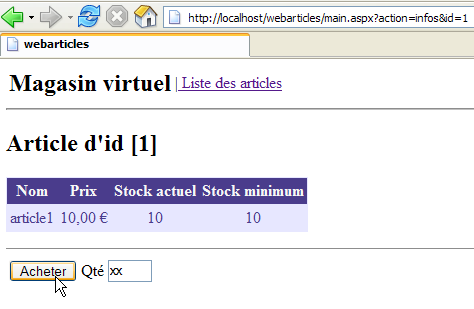 |  |
 |  |
 |  |
 |  |
 |  |
 | 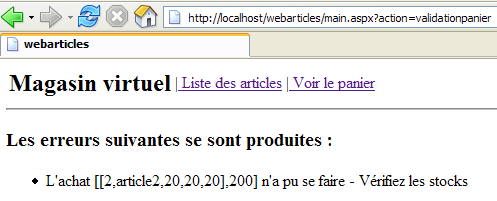 |
 |  |
 |  |
 |  |
 |  |
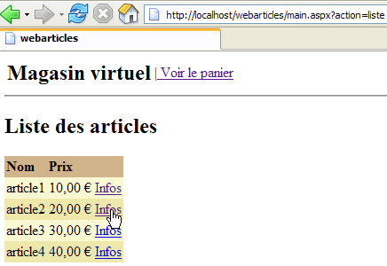 |  |
2.2.5. La couche [dao] revisitée
Dans notre première implémentation de la couche [dao], l'interface [IArticlesDao] d'accès aux données avait été implémentée par une classe stockant les articles dans un objet [ArrayList]. Cela nous a permis de ne pas nous apesantir sur cette couche et de montrer que seule importait son interface et non son implémentation. Nous avons pu ainsi construire une application web opérationnelle. Celle-ci a trois couches [web], [domain] et [dao]. Nous allons proposer ici différentes implémentations de la couche [dao]. Chacune d'elles pourra remplacer la couche [dao] actuelle sans aucune modification des couches [domain] et [web]. Cette souplesse est obtenue parce que :
- la couche [domain] ne s'adresse pas à une classe concrète mais à une interface [IArticlesDao]
- grâce à Spring, nous avons pu cacher à la couche [domain] le nom de la classe d'implémentation de l'interface [IArticlesDao].
2.2.5.1. Elements de la couche [dao]
Rappelons certains des éléments de la couche [dao] qui seront conservés dans les nouvelles implémentations :
- - [IArticlesDao]: l'interface d'accès à la couche [dao]
- - [Article] : classe définissant un article
2.2.5.2. La classe [Article]
La classe définissant un article est la suivante :
Imports System
Namespace istia.st.articles.dao
Public Class Article
' champs privés
Private _id As Integer
Private _nom As String
Private _prix As Double
Private _stockactuel As Integer
Private _stockminimum As Integer
' id article
Public Property id() As Integer
Get
Return _id
End Get
Set(ByVal Value As Integer)
If Value <= 0 Then
Throw New Exception("Le champ id [" + Value.ToString + "] est invalide")
End If
Me._id = Value
End Set
End Property
' nom article
Public Property nom() As String
Get
Return _nom
End Get
Set(ByVal Value As String)
If Value Is Nothing OrElse Value.Trim.Equals("") Then
Throw New Exception("Le champ nom [" + Value + "] est invalide")
End If
Me._nom = Value
End Set
End Property
' prix article
Public Property prix() As Double
Get
Return _prix
End Get
Set(ByVal Value As Double)
If Value < 0 Then
Throw New Exception("Le champ prix [" + Value.ToString + "] est invalide")
End If
Me._prix = Value
End Set
End Property
' stock actuel article
Public Property stockactuel() As Integer
Get
Return _stockactuel
End Get
Set(ByVal Value As Integer)
If Value < 0 Then
Throw New Exception("Le champ stockActuel [" + Value.ToString + "] est invalide")
End If
Me._stockactuel = Value
End Set
End Property
' stock minimum article
Public Property stockminimum() As Integer
Get
Return _stockminimum
End Get
Set(ByVal Value As Integer)
If Value < 0 Then
Throw New Exception("Le champ stockMinimum [" + Value.ToString + "] est invalide")
End If
Me._stockminimum = Value
End Set
End Property
' constructeur par défaut
Public Sub New()
End Sub
' constructeur avec propriétés
Public Sub New(ByVal id As Integer, ByVal nom As String, ByVal prix As Double, ByVal stockactuel As Integer, ByVal stockminimum As Integer)
Me.id = id
Me.nom = nom
Me.prix = prix
Me.stockactuel = stockactuel
Me.stockminimum = stockminimum
End Sub
' méthode d'identification de l'article
Public Overrides Function ToString() As String
Return "[" + id.ToString + "," + nom + "," + prix.ToString + "," + stockactuel.ToString + "," + stockminimum.ToString + "]"
End Function
End Class
End Namespace
Cette classe offre :
- un constructeur permettant de fixer les 5 informations d'un article : [id, nom, prix, stockactuel, stockminimum]
- des propriétés publiques permettant de lire et écrire les 5 informations.
- une vérification des données insérées dans l'article. En cas de données erronées, une exception est lancée.
- une méthode toString qui permet d'obtenir la valeur d'un article sous forme de chaîne de caractères. C'est souvent utile pour le débogage d'une application.
2.2.5.3. L'interface [IArticlesDao]
L'interface [IArticlesDao] est définie comme suit :
Imports System
Imports System.Collections
Namespace istia.st.articles.dao
Public Interface IArticlesDao
' liste de tous les articles
Function getAllArticles() As IList
' ajoute un article
Function ajouteArticle(ByVal unArticle As Article) As Integer
' supprime un article
Function supprimeArticle(ByVal idArticle As Integer) As Integer
' modifie un article
Function modifieArticle(ByVal unArticle As Article) As Integer
' recherche un article
Function getArticleById(ByVal idArticle As Integer) As Article
' supprime tous les articles
Sub clearAllArticles()
' change le stock d'u article
Function changerStockArticle(ByVal idArticle As Integer, ByVal mouvement As Integer) As Integer
End Interface
End Namespace
Le rôle des différentes méthodes de l'interface est le suivant :
rend tous les articles de la source de données | |
vide la source de données | |
rend l'objet [Article] identifié par son numéro | |
permet d'ajouter un article à la source de données | |
permet de modifier un article de la source de données | |
permet de supprimer un article de la source de données | |
permet de modifier le stock d'un article de la source de données |
L'interface met à disposition des programmes clients un certain nombre de méthodes définies uniquement par leurs signatures. Elle ne s'occupe pas de la façon dont ces méthodes seront réellement implémentées. Cela amène de la souplesse dans une application. Le programme client fait ses appels sur une interface et non pas sur une implémentation précise de celle-ci.
 |
Le choix d'une implémentation précise se fait au moyen d'un fichier de configuration Spring.
2.3. La classe d'implémentation [ArticlesDaoPlainODBC]
Nous proposons une nouvelle implémentation de la couche [dao] qui suppose que les données sont dans une source ODBC. On sait que sous Windows, quasiment tous les SGBD du marché possèdent un pilote ODBC. L'intérêt de cette solution est qu'on peut changer de SGBD de façon transparente pour l'application. L'inconvénient est qu'un pilote ODBC n'exploitant que les traits communs à tous les SGBD est en général moins performant qu'un pilote spécifiquement écrit pour exploiter tout le potentiel d'un SGBD particulier. On pourra consulter le paragraphe 3.7, pour découvrir un exemple de création de source ODBC.
2.3.1. Le code
2.3.1.1. Le squelette
La classe [ArticlesDaoPlainODBC] implémente l'interface [IArticlesDao] de la façon suivante :
Commentaires :
- ligne 3, on importe l'espace de noms contenant les classes .NET d'accès aux sources ODBC
- ligne 11 - mémorisera la connexion à la source ODBC
- ligne 12 - mémorisera le nom DSN de la source de données
- lignes 13-19 - variables privées de type [OdbcCommand] définissant les requêtes SQL utilisées par les différentes méthodes de la classe
- lignes 22-27 - le constructeur. Il reçoit les éléments qui lui permettent de construire l'objet [OdbcConnection] qui va relier le code à la source de données ODBC
- lignes 29-31 - la méthode d'ajout d'un article
- lignes 33-35 - la méthode pour changer le stock d'un article
- lignes 37-39 - la méthode qui supprime tous les articles de la source de données ODBC
- lignes 41-43 - la méthode qui obtient la liste de tous les articles de la source ODBC
- lignes 45-47 - la méthode qui permet d'obtenir un article particulier
- lignes 49-51 - la méthode qui permet de modifier certains champs d'un article dont on a le numéro
- lignes 53-55 - la méthode qui permet de supprimer un article dont on a le numéro
- lignes 57-60 - méthode utilitaire permettant d'exécuter un [SELECT] sur la source de données et d'en rendre le résultat
- lignes 62-64 - méthode utilitaire permettant d'exécuter un [INSERT, UPDATE, DELETE] sur la source de données et d'en rendre le résultat
2.3.1.2. Le constructeur
Commentaires :
- ligne 2 - le constructeur reçoit les trois informations dont il a besoin pour se connecter à une source ODBC : le nom DSN de la source, l'identité avec laquelle on doit se connecter, le mot de passe associé.
- ligne 8 - on mémorise le nom DSN de la source afin de pouvoir le redonner dans les messages d'erreurs.
- ligne 9 - l'objet [OdbcConnection] est instancié. Une connexion instanciée n'est pas une connexion ouverte. C'est la méthode [open] qui fait l'ouverture.
- lignes 12-19 - on prépare les requêtes SQL dans les objets [OdbcCommand]. Cela nous évitera de les reconstruire à chaque fois qu'on en a besoin. Les paramètres formels ? des requêtes seront remplacés au moment de l'exécution de la requête par des valeurs réelles.
2.3.1.3. La méthode executeQuery
Commentaires :
- la méthode [executeQuery] est une méthode utilitaire qui :
- exécute une requête [SELECT id, nom, prix, stockactuel, stockminimum from ARTICLES ...] sur la source de données
- rend le résultat sous la forme d'une liste d'objets [Article]
- ligne 1 - l'unique paramètre de la méthode est l'objet [OdbcCommand] contenant la requête [Select] à exécuter.
- ligne 7 - la connexion est ouverte. Elle sera fermée ligne 29 qu'il y ait eu erreur ou non.
- ligne 9 - l'objet [OdbcDataReader] nécessaire pour exploiter le résultat du [Select] est instancié
- lignes 13-23 - chaque ligne résultat du [Select] est mise dans un objet [Article] qui va rejoindre les autres articles dans un objet [ArrayList]
- la liste des articles est rendue ligne 25
- aucune exception n'est gérée. Elle devra l'être par le code appelant cette méthode.
2.3.1.4. La méthode executeUpdate
Commentaires :
- la méthode reçoit un objet [OdbcCommand] qui contient une requête SQL de type [Insert, Update, Delete].
- la connexion est ouverte ligne 5. Elle sera refermée ligne 10 qu'il y ait eu une exception ou non.
- la requête de mise à jour est exécutée ligne 7. On en rend immédiatement le résultat qui est le nombre de lignes de la table ARTICLES modifiées par la requête.
2.3.1.5. La méthode ajouteArticle
Commentaires :
- ligne 1 - la méthode reçoit l'article à ajouter à la source de données ODBC. Elle rend le nombre de lignes affectées par cette opération, c.a.d. 1 ou 0
- lignes 3 et 20 - la méthode est synchronisée. Ce sera le cas de toutes les méthodes d'accès aux données. Cela entraîne qu'un seul thread à la fois pourra travailler sur la source de données. C'est probablement trop conservateur. Il existe de meilleures alternatives, notamment celle d'inclure ces opérations dans des transactions. Dans ce cas, c'est le SGBD qui gère les accès concurrents. Nous n'avons pas voulu introduire la notion de transaction dès maintenant. Spring nous offre la possibilité de les introduire dans la couche [domain]. Nous aurons peut-être l'occasion d'y revenir dans un autre article.
- lignes 5-12, on donne des valeurs aux paramètres formels de la requête de l'objet [insertCommand] initialisé par le constructeur. Rappelons celle-ci :
insertCommand = New OdbcCommand("insert into ARTICLES(id, nom, prix, stockactuel, stockminimum) values (?,?,?,?,?)", connexion)
les 5 valeurs nécessaires à la requête sont fournies par les lignes 7-11.
- lignes 13-19, la requête est exécutée. Si elle se passe bien, on en retourne le résultat. Sinon, on lance une exception générique avec un message d'erreur explicite
2.3.1.6. La méthode modifieArticle
Commentaires :
- ligne 1 - la méthode reçoit l'article à modifier dans la source de données ODBC. Elle rend le nombre de lignes affectées par cette opération, c.a.d. 1 ou 0
- les commentaires de la méthode [ajouteArticle] peuvent être repris ici
2.3.1.7. La méthode supprimeArticle
Commentaires :
- ligne 1 - la méthode reçoit le n° de l'article à supprimer dans la source de données ODBC. Elle rend le nombre de lignes affectées par cette opération, c.a.d. 1 ou 0
- les commentaires de la méthode [ajouteArticle] peuvent être repris ici
2.3.1.8. La méthode getAllArticles
Commentaires :
- ligne 1 - la méthode ne reçoit aucun paramètre. Elle rend la liste de tous les articles de la source de données ODBC
- la requête [Select] réclamant tous les articles est demandée à la méthode [executeQuery] - ligne 6
- la liste obtenue est rendue ligne 8
- lignes 9-12, on gère une éventuelle exception
2.3.1.9. La méthode getArticleById
Commentaires :
- ligne 1 - la méthode reçoit en paramètre le n° de l'article désiré. Elle rend celui-ci s'il est trouvé dans la source ODBC, sinon elle rend la référence [nothing].
- la requête [Select] réclamant l'article est initialisée lignes 5-8
- elle est exécutée ligne 12 - on obtient une liste d'articles
- si cette liste est vide, on rend la référence [nothing] ligne 14
- sinon l'unique article de la liste est rendu ligne 16
- lignes 17-20, on gère une éventuelle exception
2.3.1.10. La méthode clearAllArticles
Commentaires :
- ligne 1 - la méthode ne reçoit aucun paramètre et elle ne rend rien
- ligne 6 - la requête de suppression de tous les articles est exécutée
- lignes 7-10, on gère une éventuelle exception
2.3.1.11. La méthode changerStockArticle
Commentaires :
- ligne 1 - la méthode reçoit en paramètres le n° de l'article dont il faut modifier le stock ainsi que l'incrément de celui-ci (en positif ou négatif). Elle rend le nombre de lignes modifiées par l'opération c.a.d. 0 ou 1.
- lignes 5-10, la requête [updateStockCommand] est initialisée. Rappelons le texte de la requête SQL :
updateStockCommand = New OdbcCommand("update ARTICLES set stockactuel=stockactuel+? where id=? and (stockactuel+?)>=0", connexion)
on remarquera que le stock n'est modifié que si une fois modifié il reste >=0.
- la requête de mise à jour du stock de l'article est exécutée ligne 13 et le résultat rendu
- lignes 14-18, on gère une éventuelle exception
2.3.2. Génération de l'assembly de la couche [dao]
Le projet Visual Studio de cette nouvelle version de la couche [dao] a la structure suivante :

Le projet est configuré pour générer une DLL appelée [webarticles-dao.dll] :
 | 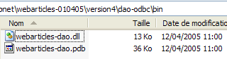 |
2.3.3. Tests Nunit de la couche [dao]
2.3.3.1. Création d'une source ODBC-Firebird
Pour tester notre nouvelle couche [dao] il nous faut une source de données ODBC et donc une base de données. Nous utilisons le SGBD Firebird (paragraphe 3.5). Avec IBExpert (paragraphe 3.6), nous créons la base d'articles suivante :
 | 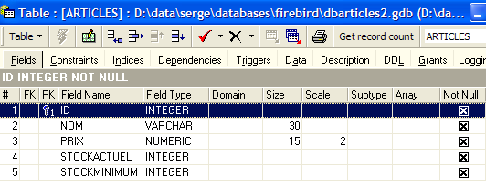 |
L'administrateur de cette base sera l'utilisateur [SYSDBA] avec le mot de passe [masterkey]. Nous créons quelques articles :

Nous créons maintenant la source ODBC Firebird suivante (cf paragraphe 3.7) :
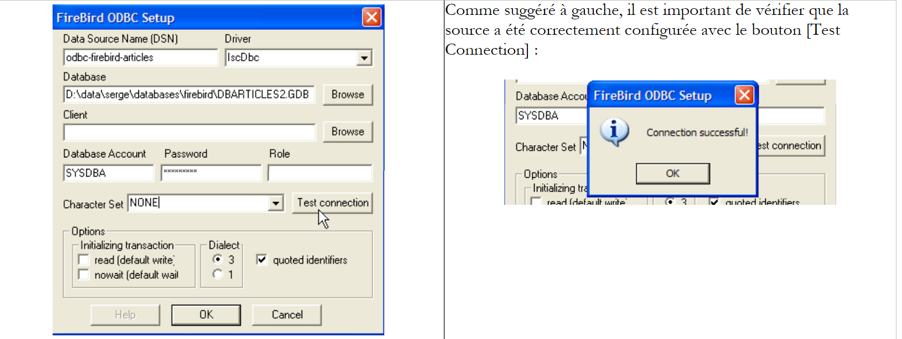 |
La source ODBC créée a les caractéristiques suivantes :
- nom DSN : odbc-firebird-articles
- identité de connexion : SYSDBA
- mot de passe associé : masterkey
2.3.3.2. La classe de test NUnit
Nous avons déjà écrit une classe de test pour la couche [dao] initialement construite. Si le lecteur s'en souvient, cette classe testait non pas une classe précise mais l'interface [IArticlesDao] :
Imports System
Imports System.Collections
Imports NUnit.Framework
Imports istia.st.articles.dao
Imports System.Threading
Imports Spring.Objects.Factory.Xml
Imports System.IO
Namespace istia.st.articles.tests
<TestFixture()> _
Public Class NunitTestArticlesArrayList
' l'objet à tester
Private articlesDao As IArticlesDao
<SetUp()> _
Public Sub init()
' on récupère une instance du fabricant d'objets Spring
Dim factory As XmlObjectFactory = New XmlObjectFactory(New FileStream("spring-config.xml", FileMode.Open))
' on demande l'instanciation de l'objet articlesdao
articlesDao = CType(factory.GetObject("articlesdao"), IArticlesDao)
End Sub
....
On voit que dans la méthode d'attribut <Setup()>, on demande à Spring une référence sur le singleton nommé [articlesdao] de type [IArticlesDao] donc du type de l'interface. Le singleton [articlesdao] était défini par le fichier de configuration [spring-config.xml] suivant :
<?xml version="1.0" encoding="iso-8859-1" ?>
<!DOCTYPE objects PUBLIC "-//SPRING//DTD OBJECT//EN"
"http://www.springframework.net/dtd/spring-objects.dtd">
<objects>
<object id="articlesdao" type="istia.st.articles.dao.ArticlesDaoArrayList, webarticles-dao"/>
</objects>
Montrons que la classe de test initiale nous permet de tester notre nouvelle couche [dao] sans modification ni recompilation.
- Créons dans le dossier Visual Studio de notre nouvelle couche [dao] le dossier [tests] (à droite ci-dessous) par recopie du dossier [bin] du projet de tests de la couche [dao] initiale (à gauche ci-dessous). Au besoin, le lecteur est invité à revoir le projet de test de la version première de la couche [dao] dans la première partie de l'article.
 |  |
- dans le dossier [tests] remplaçons la DLL [webarticles-dao.dll] issue de l'ancienne couche [dao] par la DLL [webarticles-dao.dll] issue de la nouvelle couche [dao]
- modifions le fichier de configuration [spring-config.xml] afin d'instancier la nouvelle classe [ArticlesDaoPlainODBC] :
Commentaires :
- ligne 6, l'objet [articlesdao] est maintenant associé à une instance de la classe [ ArticlesDaoPlainODBC]
- cette classe a un constructeur à trois arguments :
- le nom de la source DSN - ligne 8
- l'identité avec laquelle on fera l'accès à la base - ligne 11
- le mot de passe associé à cette identité - ligne 14
Nous reprenons là les informations de la source ODBC-Firebird que nous avons créée précédemment.
2.3.3.3. Tests
Nous sommes maintenant prêts pour les tests. Al'aide de l'application [Nunit-Gui], nous chargeons la DLL [test-webarticles-dao.dll] du dossier [tests] ci-dessus et exécutons le test [testGetAllArticles] :

En regardant la copie d'écran ci-dessus, on pourra regretter le nom [NUnitTestArticlesDaoArrayList] donné initialement à la classe de test. Cela prête à confusion. C'est bien la classe [ArticlesDaoPlainODBC] qui est ici testée. La copie d'écran montre que nous avons récupéré correctement les articles que nous avions placés dans la table [ARTICLES]. Maintenant, faisons la totalité des tests :

Dans la fenêtre de gauche, on voit la liste des méthodes testées. La couleur du point qui précède le nom de chaque méthode indique la réussite (vert) ou l'échec (rouge) de la méthode. Le lecteur qui visualise ce document sur écran pourra voir que tous les tests ont été réussis.
2.3.3.4. Conclusion
Nous venons de montrer que :
- parce que la classe de test NUnit référençait non pas une classe mais une interface ;
- parce que le nom exact de la classe d'instanciation de l'interface était fourni dans un fichier de configuration et non dans le code ;
- parce que Spring s'occupait d'instancier la classe et d'en donner une référence au code de test ;
alors le code de test écrit pour la couche [dao] initiale restait valide pour une nouvelle implémentation de cette même couche. Nous n'avons pas eu besoin d'avoir accès au code de la classe de test. Nous n'avons utilisé que sa version compilée, celle générée lors du test de la couche [dao] initiale. Nous allons faire des conclusions analogues lorsqu'il va falloir intéger la nouvelle couche [dao] dans l'application [webarticles].
2.3.4. Intégration de la nouvelle couche [dao] dans l'application [webarticles]
2.3.4.1. Les tests d'intégration
Rappelons que la version initiale de l'application [webarticles] avait été déployée dans le dossier [runtime] suivant :
| |
|
Le lecteur est invité à revoir éventuellement le paragraphe 2.2.4 qui détaille les modalités du déploiement de l'application [webarticles]. Nous apportons les modifications suivantes au contenu du dossier [runtime] :
- dans le dossier [bin], la DLL de l'ancienne couche [dao] est remplacée par la DLL de la nouvelle couche [dao]
- dans [runtime], le fichier de configuration [web.config] est remplacé par un fichier qui prend en compte la nouvelle classe d'implémentation de la couche [dao] :
 |
 |
Le nouveau fichier de configuration [web.config] est le suivant :
Commentaires :
- les lignes 14-24 associent au singleton [articlesDao] une instance de la nouvelle classe [ArticlesDaoPlainODBC]. C'est la seule modification. Nous l'avons déjà rencontrée lors des tests de la nouvelle couche [dao].
Nous sommes prêts pour les tests. Nous configurons le serveur web [Cassini] de la même façon que dans le paragraphe 2.2.4. Nous initialisons la table des articles [Firebird] avec les valeurs suivantes :

Assurez-vous que le serveur web Cassini ainsi que le SGBD [Firebird] sont lancés. Avec un navigateur nous demandons l'url [http://localhost/webarticles/main.aspx] :

 |
Maintenant vérifions le contenu de la table [ARTICLES] dans la base de données [Firebird] :

Les articles [parapluie] et [bottes] ont été achetés et leurs stocks décrémentés de la quantité achetée. L'article [chapeau] n'a pu être acheté car la quantité demandée excédait la quantité en stock. Nous invitons le lecteur à faire des tests complémentaires.
2.3.4.2. Conclusion
Qu'avons-nous fait ?
- nous avons repris la version de déploiement de l'ancienne version ;
- nous avons remplacé la DLL de la couche [dao] par une nouvelle version. Les DLL des couches [web] et [domain] sont restées inchangées ;
- nous avons modifié le fichier de configuration [web.config] afin qu'il prenne en compte la nouvelle classe d'implémentation de la couche [dao]
Tout cela est propre et offre une grande facilité d'évolution à l'application web. Ces caractéristiques importantes nous sont apportées par deux choix d'architecture :
- l'accès aux couches via des interfaces
- l'intégration et la configuration des couches par Spring.
Nous proposons maintenant une nouvelle implémentation de la couche [dao].
2.4. La classe d'implémentation [ArticlesDaoSqlServer]
La seconde implémentation de la couche [dao] suppose que les données sont dans une base SQL Server. Microsoft met à disposition un SGBD appelé MSDE qui est une version limitée de SQL Server. On trouvera en annexe comment l'obtenir et l'installer, paragraphe 3.12.
2.4.1. Le code
La classe [ArticlesDaoSqlServer] est très proche de la classe [ArticlesDaoPlainODBC] étudiée précédemment. Aussi n'indiquerons-nous que les changements apportés à la version précédente :
- les classes nécessaires sont dans l'espace de noms [System.Data.SqlClient] au lieu de l'espace de noms [System.Data.Odbc]
- la connexion de type [OdbcConnection] a maintenant le type [SqlConnection]
- les objets [OdbcCommand] ont maintenant le type [SqlCommand]
- la syntaxe des requêtes SQL paramétrées changent. La requête d'insertion devient ainsi :
insertCommand = New SqlCommand("insert into ARTICLES(id, nom, prix, stockactuel, stockminimum) values (@id,@nom,@prix,@sa,@sm)", connexion)
alors qu'elle était précédemment :
insertCommand = New OdbcCommand("insert into ARTICLES(id, nom, prix, stockactuel, stockminimum) values (?,?,?,?,?)", connexion)
- la méthode [ajouteArticle] devient alors la suivante :
Public Function ajouteArticle(ByVal unArticle As Article) As Integer Implements IArticlesDao.ajouteArticle
' section exclusive
SyncLock Me
' on prépare la requête d'insertion
With insertCommand.Parameters
.Clear()
.Add(New SqlParameter("@id", unArticle.id))
.Add(New SqlParameter("@nom", unArticle.nom))
.Add(New SqlParameter("@prix", unArticle.prix))
.Add(New SqlParameter("@sa", unArticle.stockactuel))
.Add(New SqlParameter("@sm", unArticle.stockminimum))
End With
Try
'on l'exécute
Return executeUpdate(insertCommand)
Catch ex As Exception
'erreur de requête
Throw New Exception(String.Format("Erreur à l'ajout de l'article [{0}] : {1}", unArticle.ToString, ex.Message))
End Try
End SyncLock
End Function
- le constructeur est également modifié :
Public Sub New(ByVal serveur As String, ByVal databaseName As String, ByVal uid As String, ByVal password As String)
' serveur : nom de l'instance SQL server à atteindre
' databaseName : nom de la base de données à atteindre
' uid : identité de l'utilisateur
' password : son mot de passe
'on récupère le nom de la base passé en argument
Me.databaseName = databaseName
'on instancie la connexion
Dim connectString As String = String.Format("Data Source={0};Initial Catalog={1};UID={2};PASSWORD={3}", serveur, databaseName, uid, password)
connexion = New SqlConnection(connectString)
' on prépare les requêtes SQL
insertCommand = New SqlCommand("insert into ARTICLES(id, nom, prix, stockactuel, stockminimum) values (@id,@nom,@prix,@sa,@sm)", connexion)
...
End Sub
Le constructeur admet maintenant quatre paramètres :
' serveur : nom de l'instance SQL server à atteindre
' databaseName : nom de la base de données à atteindre
' uid : identité de l'utilisateur
' password : son mot de passe
Le code complet de la classe [ArticlesDaoSqlServer] est le suivant :
Imports System
Imports System.Collections
Imports System.Data.SqlClient
Namespace istia.st.articles.dao
Public Class ArticlesDaoSqlServer
Implements istia.st.articles.dao.IArticlesDao
' champs privés
Private connexion As SqlConnection = Nothing
Private databaseName As String
Private insertCommand As SqlCommand
Private updatecommand As SqlCommand
Private deleteSomeCommand As SqlCommand
Private selectSomeCommand As SqlCommand
Private updateStockCommand As SqlCommand
Private deleteAllCommand As SqlCommand
Private selectAllCommand As SqlCommand
' constructeur
Public Sub New(ByVal serveur As String, ByVal databaseName As String, ByVal uid As String, ByVal password As String)
' serveur : nom de l'instance SQL server à atteindre
' databaseName : nom de la base de données à atteindre
' uid : identité de l'utilisateur
' password : son mot de passe
'on récupère le nom de la base passé en argument
Me.databaseName = databaseName
'on instancie la connexion
Dim connectString As String = String.Format("Data Source={0};Initial Catalog={1};UID={2};PASSWORD={3}", serveur, databaseName, uid, password)
connexion = New SqlConnection(connectString)
' on prépare les requêtes SQL
insertCommand = New SqlCommand("insert into ARTICLES(id, nom, prix, stockactuel, stockminimum) values (@id,@nom,@prix,@sa,@sm)", connexion)
updatecommand = New SqlCommand("update ARTICLES set nom=@nom, prix=@prix, stockactuel=@sa, stockminimum=@sm where id=@id", connexion)
deleteSomeCommand = New SqlCommand("delete from ARTICLES where id=@id", connexion)
selectSomeCommand = New SqlCommand("select id, nom, prix, stockactuel, stockminimum from ARTICLES where id=@id", connexion)
updateStockCommand = New SqlCommand("update ARTICLES set stockactuel=stockactuel+@mvt where id=@id and (stockactuel+@mvt)>=0", connexion)
selectAllCommand = New SqlCommand("select id, nom, prix, stockactuel, stockminimum from ARTICLES", connexion)
deleteAllCommand = New SqlCommand("delete from ARTICLES", connexion)
End Sub
Public Function ajouteArticle(ByVal unArticle As Article) As Integer Implements IArticlesDao.ajouteArticle
' section exclusive
SyncLock Me
' on prépare la requête d'insertion
With insertCommand.Parameters
.Clear()
.Add(New SqlParameter("@id", unArticle.id))
.Add(New SqlParameter("@nom", unArticle.nom))
.Add(New SqlParameter("@prix", unArticle.prix))
.Add(New SqlParameter("@sa", unArticle.stockactuel))
.Add(New SqlParameter("@sm", unArticle.stockminimum))
End With
Try
'on l'exécute
Return executeUpdate(insertCommand)
Catch ex As Exception
'erreur de requête
Throw New Exception(String.Format("Erreur à l'ajout de l'article [{0}] : {1}", unArticle.ToString, ex.Message))
End Try
End SyncLock
End Function
Public Function changerStockArticle(ByVal idArticle As Integer, ByVal mouvement As Integer) As Integer Implements IArticlesDao.changerStockArticle
' section exclusive
SyncLock Me
' on prépare la requête de mise à jour du stock
With updateStockCommand.Parameters
.Clear()
.Add(New SqlParameter("@mvt", mouvement))
.Add(New SqlParameter("@id", idArticle))
End With
'on l'exécute
Try
Return executeUpdate(updateStockCommand)
Catch ex As Exception
'erreur de requête
Throw New Exception(String.Format("Erreur lors du changement de stock [idArticle={0}, mouvement={1}] : [{2}]", idArticle, mouvement, ex.Message))
End Try
End SyncLock
End Function
Public Sub clearAllArticles() Implements IArticlesDao.clearAllArticles
' section exclusive
SyncLock Me
Try
'on exécute la requête d'insertion
executeUpdate(deleteAllCommand)
Catch ex As Exception
'erreur de requête
Throw New Exception(String.Format("Erreur lors de la suppression des articles : {0}", ex.Message))
End Try
End SyncLock
End Sub
Public Function getAllArticles() As System.Collections.IList Implements IArticlesDao.getAllArticles
' section exclusive
SyncLock Me
Try
'on exécute la requête select
Dim articles As IList = executeQuery(selectAllCommand)
'on retourne le liste
Return articles
Catch ex As Exception
'erreur de requête
Throw New Exception(String.Format("Erreur lors de l'obtention des articles [select id,nom,prix,stockactuel,stockminimum from articles]: {0}", ex.Message))
End Try
End SyncLock
End Function
Public Function getArticleById(ByVal idArticle As Integer) As Article Implements IArticlesDao.getArticleById
' section exclusive
SyncLock Me
' on prépare la requête select
With selectSomeCommand.Parameters
.Clear()
.Add(New SqlParameter("@id", idArticle))
End With
'on l'exécute
Try
'on exécute la requête
Dim articles As IList = executeQuery(selectSomeCommand)
'on test si l'on a trouvé l'article
If articles.Count = 0 Then Return Nothing
'on retourne l'article
Return CType(articles.Item(0), Article)
Catch ex As Exception
'erreur de requête
Throw New Exception(String.Format("Erreur lors de la recherche de l'article [{0} : {1}", idArticle, ex.Message))
End Try
End SyncLock
End Function
Public Function modifieArticle(ByVal unArticle As Article) As Integer Implements IArticlesDao.modifieArticle
' section exclusive
SyncLock Me
' on prépare la requête update
With updatecommand.Parameters
.Clear()
.Add(New SqlParameter("@nom", unArticle.nom))
.Add(New SqlParameter("@prix", unArticle.prix))
.Add(New SqlParameter("@sa", unArticle.stockactuel))
.Add(New SqlParameter("@sm", unArticle.stockminimum))
.Add(New SqlParameter("@id", unArticle.id))
End With
' on l'exécute
Try
'on exécute la requête d'insertion
Return executeUpdate(updatecommand)
Catch ex As Exception
'erreur de requête
Throw New Exception("Erreur lors de la modification de l'article [" + unArticle.ToString + "]", ex)
End Try
End SyncLock
End Function
Public Function supprimeArticle(ByVal idArticle As Integer) As Integer Implements IArticlesDao.supprimeArticle
' section exclusive
SyncLock Me
' on prépare la requête delete
With deleteSomeCommand.Parameters
.Clear()
.Add(New SqlParameter("@id", idArticle))
End With
'on l'exécute
Try
'on exécute la requête de suppression
Return executeUpdate(deleteSomeCommand)
Catch ex As Exception
'erreur de requête
Throw New Exception(String.Format("Erreur lors de la suppression de l'article [id={0}] : {1}", idArticle, ex.Message))
End Try
End SyncLock
End Function
Private Function executeQuery(ByVal query As SqlCommand) As IList
' exécution d'une requête SELECT
' déclaration de l'objet permettant l'accès à toutes les lignes de la table résultat
Dim myReader As SqlDataReader = Nothing
Try
'on crée une connexion à la BDD
connexion.Open()
'on exécute la requête
myReader = query.ExecuteReader()
'on déclare une liste d'articles pour la retourner par la suite
Dim articles As IList = New ArrayList
Dim unArticle As Article
While myReader.Read()
'on prépare un article avec les valeurs du reader
unArticle = New Article
unArticle.id = myReader.GetInt32(0)
unArticle.nom = myReader.GetString(1)
unArticle.prix = myReader.GetDouble(2)
unArticle.stockactuel = myReader.GetInt32(3)
unArticle.stockminimum = myReader.GetInt32(4)
'on ajoute l'article à la liste
articles.Add(unArticle)
End While
'on retourne le résultat
Return articles
Finally
' libération des ressources
If Not myReader Is Nothing And Not myReader.IsClosed Then myReader.Close()
If Not connexion Is Nothing Then connexion.Close()
End Try
End Function
Private Function executeUpdate(ByVal updateCommand As SqlCommand) As Integer
' exécution d'une requête de mise à jour
Try
'on crée une connexion à la BDD
connexion.Open()
'on exécute la requête
Return updateCommand.ExecuteNonQuery()
Finally
' libération des ressources
If Not connexion Is Nothing Then connexion.Close()
End Try
End Function
End Class
End Namespace
Le lecteur est invité à lire ce code à la lumière des commentaires de la classe [ArticlesDaoPlainODBC] faits précédemment.
2.4.2. Génération de l'assembly de la couche [dao]
Le nouveau projet Visual Studio a la structure suivante :
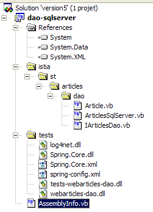
Le projet est configuré pour générer une DLL appelée [webarticles-dao.dll] :
 |  |
2.4.3. Tests Nunit de la couche [dao]
2.4.3.1. Création d'une source de données SQL Server
Pour tester notre nouvelle couche [dao] il nous faut une source de données SQL Server et donc le SGBD SQL Server. Nous utiliserons en fait le SGBD MSDE (MicroSoft Data Engine) (paragraphe 3.12) qui est une version de SQL Server simplement limitée par le nombre d'utilisateurs simultanés acceptés. Avec [EMS MS SQL Manager] (paragraphe 3.14) nous créons la base d'articles suivante dans une instance MSDE appelée [portable1_tahe\msde140405] :
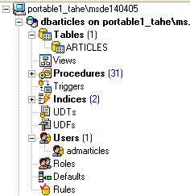 | 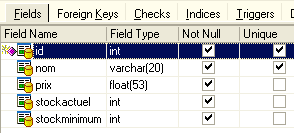 |
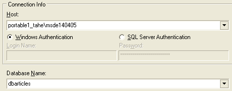
La base est propriété de l'utilisateur [mdparticles] de mot de passe [admarticles]. La commande Transact-SQL de création de la table [ARTICLES] est la suivante :
CREATE TABLE [ARTICLES] (
[id] int NOT NULL,
[nom] varchar(20) COLLATE French_CI_AS NOT NULL,
[prix] float(53) NOT NULL,
[stockactuel] int NOT NULL,
[stockminimum] int NOT NULL,
CONSTRAINT [ARTICLES_uq] UNIQUE ([nom]),
PRIMARY KEY ([id]),
CONSTRAINT [ARTICLES_ck_id] CHECK ([id] > 0),
CONSTRAINT [ARTICLES_ck_nom] CHECK ([nom] <> ''),
CONSTRAINT [ARTICLES_ck_prix] CHECK ([prix] >= 0),
CONSTRAINT [ARTICLES_ck_stockactuel] CHECK ([stockactuel] >= 0),
CONSTRAINT [ARTICLES_ck_stockminimum] CHECK ([stockminimum] >= 0)
)
ON [PRIMARY]
GO
Nous créons quelques articles :

2.4.3.2. La classe de test NUnit
La classe de test Nunit de la classe d'implémentation [ArticlesDaoSqlServer] est la même que celle de la classe [ArticlesDaoPlainODBC] (cf paragraphe 2.3.3.2). Nous suivons une démarche analogue pour préparer le test Nunit de la classe :
- nous créons dans le dossier Visual Studio du projet [dao-sqlserver] le dossier [tests] (à droite) par recopie du dossier [tests] du projet [dao-odbc] (à gauche) :
 |  |
- dans le dossier [tests] du projet [dao-sqlserver], nous remplaçons la DLL [webarticles-dao.dll] par la DLL [webarticles-dao.dll] issue de la génération du projet [dao-sqlserver]
- nous modifions le fichier de configuration [spring-config.xml] afin d'instancier la nouvelle classe [ArticlesDaoSqlServer] :
Commentaires :
- ligne 7, l'objet [articlesdao] est maintenant associé à une instance de la classe [ ArticlesDaoSqlServeur]
- cette classe a un constructeur à quatre arguments :
- le nom de l'instance MSDE utilisée - ligne 9
- le nom de la base de données - ligne 12
- l'identité avec laquelle on fera l'accès à la base - ligne 15
- le mot de passe associé à cette identité - ligne 18
Nous reprenons là les informations de la source MSDE que nous avons créée précédemment.
2.4.3.3. Tests
Nous sommes prêts pour les tests. A l'aide de l'application [Nunit-Gui], nous chargeons la DLL [test-webarticles-dao.dll] du dossier [tests] ci-dessus et exécutons le test [testGetAllArticles] :
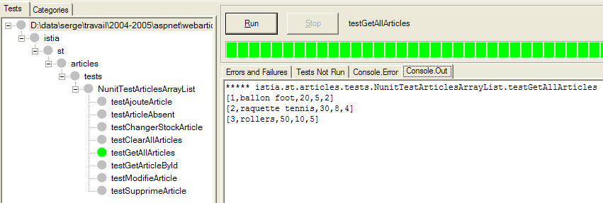
Malgré le nom [NUnitTestArticlesDaoArrayList] donné initialement à la classe de test et qui a été conservé puisque nous utilisons la DLL [tests-webarticles-dao.dll] issue de cette classe, c'est bien la classe [ArticlesDaoSqlserver] qui est ici testée. La copie d'écran montre que nous avons récupéré correctement les articles que nous avions placés dans la table [ARTICLES]. Maintenant, faisons la totalité des tests :

Dans la fenêtre de gauche, on voit la liste des méthodes testées. La couleur du point qui précède le nom de chaque méthode indique la réussite (vert) ou l'échec (rouge) de la méthode. Le lecteur qui visualise ce document sur écran pourra voir que tous les tests ont été réussis.
2.4.4. Intégration de la nouvelle couche [dao] dans l'application [webarticles]
Nous suivons la démarche expliquée au paragraphe 2.3.4. Nous apportons les modifications suivantes au contenu du dossier [runtime] :
- dans le dossier [bin], la DLL de l'ancienne couche [dao] est remplacée par la DLL de la nouvelle couche [dao] implémentée par la classe [ArticlesDaoSqlServer]
- dans [runtime], le fichier de configuration [web.config] est remplacé par un fichier qui prend en compte la nouvelle classe d'implémentation :
Commentaires :
- les lignes 15-33 associent au singleton [articlesDao] une instance de la nouvelle classe [ArticlesDaoSqlServer]. C'est la seule modification. Nous l'avons déjà rencontrée lors des tests de la nouvelle couche [dao]
Nous sommes prêts pour les tests. Nous gardons la même configuration du serveur web [Cassini] qu'auparavant. Nous initialisons la table des articles [MSDE] avec les valeurs suivantes :
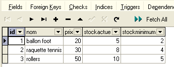
Assurez-vous que le serveur web Cassini ainsi que le SGBD MSDE (ici l'instance portable1_tahe\msde140405) sont lancés. Avec un navigateur nous demandons l'URL [http://localhost/webarticles/main.aspx] :

 |
Maintenant vérifions le contenu de la table [ARTICLES] dans la base de données [MSDE] :

Les articles [ballon foot] et [raquette tennis] ont été achetés et leurs stocks décrémentés de la quantité achetée. L'article [rollers] n'a pu être acheté car la quantité demandée excédait la quantité en stock. Nous invitons le lecteur à faire des tests complémentaires.
2.4.5. La classe d'implémentation [ArticlesDaoOleDb]
2.4.5.1. Les sources de données OleDb
La troisème implémentation de la couche [dao] suppose que les données sont dans une base accessible via un pilote OleDb. Le principe des sources OleDb est analogue à celui des sources ODBC. Un programme exploitant une source OleDb le fait via une interface standard commune à toutes les sources OleDb. Changer de source OleDb se résume à changer de pilote OleDb. Le code lui n'est pas modifié.
Il est possible de connaître les pilotes OleDb disponibles sur votre machine grâce à Visual Studio :
- faire afficher l'explorateur de serveurs par [Affichage/Explorateur de serveurs] :

- pour ajouter une nouvelle connexion, cliquer droit sur [Connexion de données] et prendre l'option [Ajouter une connexion]. On obtient alors un assistant avec lequel on peut définir les caractéristiques de la connexion :
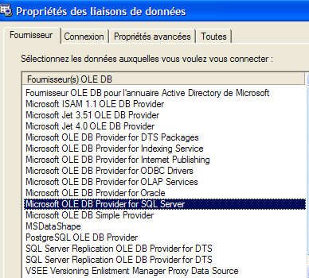
- le panneau [Fournisseur] donne la liste des pilotes OLEDB disponibles. Nous allons utiliser pour la nouvelle couche [dao], un pilote [Microsoft Jet 4.0 OLE DB Provider] qui donne accès aux bases ACCESS.
- quittons momentanément Visual Studio pour créer la base ACCESS [articles.mdb] ayant l'unique table suivante :

- la structure de la table est la suivante :
numérique - entier - clé primaire | |
texte - 20 caractères - | |
numérique - réel double | |
numérique - entier | |
numérique - entier |
- revenons à Visual Studio et créons une nouvelle connexion comme expliqué précédemment :

- nous choisissons le pilote [Microsoft Jet 4.0] et passons au panneau [Connexion] :
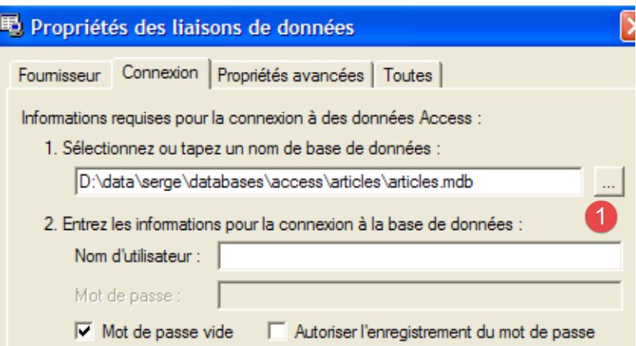
- avec le bouton [1], désigner la base ACCESS qui vient d'être créée puis terminer la définition de la connexion avec le bouton [Terminer]. La connexion créée apparaît désormais dans la liste des connexions disponibles :
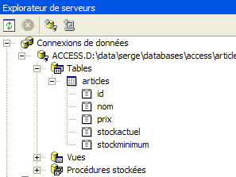
- un double clic sur la table [ARTICLES] nous donne accès à son contenu :
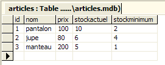
- on peut alors ajouter, modifier, supprimer des lignes dans la table.
- sélectionner dans l'explorateur de serveurs, la nouvelle connexion pour avoir accès à sa feuille de propriétés :

- la chaîne de connexion est utile à connaître. Elle nous servira pour nous connecter à la base :
Provider=Microsoft.Jet.OLEDB.4.0;User ID=Admin;Data Source=D:\data\serge\databases\access\articles\articles.mdb;Mode=Share Deny None;Extended Properties="";Jet OLEDB:System database="";Jet OLEDB:Registry Path="";Jet OLEDB:Engine Type=5;Jet OLEDB:Database Locking Mode=1;Jet OLEDB:Global Partial Bulk Ops=2;Jet OLEDB:Global Bulk Transactions=1;Jet OLEDB:Create System Database=False;Jet OLEDB:Encrypt Database=False;Jet OLEDB:Don't Copy Locale on Compact=False;Jet OLEDB:Compact Without Replica Repair=False;Jet OLEDB:SFP=False
- de cette chaîne, nous ne retiendrons que les seuls éléments suivants :
2.4.5.2. Le code de la classe [ArticlesDaoOleDb]
La classe [ArticlesDaoOleDb]] est très proche de la classe [ArticlesDaoPlainODBC] étudiée précédemment. Aussi n'indiquerons-nous que les changements apportés à la version précédente :
- les classes nécessaires sont dans l'espace de noms [System.Data.OleDb] au lieu de l'espace de noms [System.Data.Odbc]
- la connexion de type [OdbcConnection] a maintenant le type [OleDbConnection]
- les objets [OdbcCommand] ont maintenant le type [OleDbCommand]
Le constructeur de la classe admet comme unique paramètre, la chaîne de connexion à la base :
' constructeur
Public Sub New(ByVal connectString As String)
' connectString : chaîne de connexion à la source OleDb
'on instancie la connexion
connexion = New OleDbConnection(connectString)
' on prépare les requêtes SQL
...
End Sub
Le code complet de la classe [ArticlesDaoOleDb] est le suivant :
Imports System
Imports System.Collections
Imports System.Data.OleDb
Namespace istia.st.articles.dao
Public Class ArticlesDaoOleDb
Implements istia.st.articles.dao.IArticlesDao
' champs privés
Private connexion As OleDbConnection = Nothing
Private insertCommand As OleDbCommand
Private updatecommand As OleDbCommand
Private deleteSomeCommand As OleDbCommand
Private selectSomeCommand As OleDbCommand
Private updateStockCommand As OleDbCommand
Private deleteAllCommand As OleDbCommand
Private selectAllCommand As OleDbCommand
' constructeur
Public Sub New(ByVal connectString As String)
' connectString : chaîne de connexion à la source OleDb
'on instancie la connexion
connexion = New OleDbConnection(connectString)
' on prépare les requêtes SQL
insertCommand = New OleDbCommand("insert into ARTICLES(id, nom, prix, stockactuel, stockminimum) values (?,?,?,?,?)", connexion)
updatecommand = New OleDbCommand("update ARTICLES set nom=?, prix=?, stockactuel=?, stockminimum=? where id=?", connexion)
deleteSomeCommand = New OleDbCommand("delete from ARTICLES where id=?", connexion)
selectSomeCommand = New OleDbCommand("select id, nom, prix, stockactuel, stockminimum from ARTICLES where id=?", connexion)
updateStockCommand = New OleDbCommand("update ARTICLES set stockactuel=stockactuel+? where id=? and (stockactuel+?)>=0", connexion)
selectAllCommand = New OleDbCommand("select id, nom, prix, stockactuel, stockminimum from ARTICLES", connexion)
deleteAllCommand = New OleDbCommand("delete from ARTICLES", connexion)
End Sub
Public Function ajouteArticle(ByVal unArticle As Article) As Integer Implements IArticlesDao.ajouteArticle
' section exclusive
SyncLock Me
' on prépare la requête d'insertion
With insertCommand.Parameters
.Clear()
.Add(New OleDbParameter("id", unArticle.id))
.Add(New OleDbParameter("nom", unArticle.nom))
.Add(New OleDbParameter("prix", unArticle.prix))
.Add(New OleDbParameter("stockactuel", unArticle.stockactuel))
.Add(New OleDbParameter("stockminimum", unArticle.stockminimum))
End With
Try
'on l'exécute
Return executeUpdate(insertCommand)
Catch ex As Exception
'erreur de requête
Throw New Exception(String.Format("Erreur à l'ajout de l'article [{0}] : {1}", unArticle.ToString, ex.Message))
End Try
End SyncLock
End Function
Public Function changerStockArticle(ByVal idArticle As Integer, ByVal mouvement As Integer) As Integer Implements IArticlesDao.changerStockArticle
' section exclusive
SyncLock Me
' on prépare la requête de mise à jour du stock
With updateStockCommand.Parameters
.Clear()
.Add(New OleDbParameter("mvt1", mouvement))
.Add(New OleDbParameter("id", idArticle))
.Add(New OleDbParameter("mvt2", mouvement))
End With
'on l'exécute
Try
Return executeUpdate(updateStockCommand)
Catch ex As Exception
'erreur de requête
Throw New Exception(String.Format("Erreur lors du changement de stock [idArticle={0}, mouvement={1}] : [{2}]", idArticle, mouvement, ex.Message))
End Try
End SyncLock
End Function
Public Sub clearAllArticles() Implements IArticlesDao.clearAllArticles
' section exclusive
SyncLock Me
Try
'on exécute la requête d'insertion
executeUpdate(deleteAllCommand)
Catch ex As Exception
'erreur de requête
Throw New Exception(String.Format("Erreur lors de la suppression des articles : {0}", ex.Message))
End Try
End SyncLock
End Sub
Public Function getAllArticles() As System.Collections.IList Implements IArticlesDao.getAllArticles
' section exclusive
SyncLock Me
Try
'on exécute la requête select
Dim articles As IList = executeQuery(selectAllCommand)
'on retourne le liste
Return articles
Catch ex As Exception
'erreur de requête
Throw New Exception(String.Format("Erreur lors de l'obtention des articles [select id,nom,prix,stockactuel,stockminimum from articles]: {0}", ex.Message))
End Try
End SyncLock
End Function
Public Function getArticleById(ByVal idArticle As Integer) As Article Implements IArticlesDao.getArticleById
' section exclusive
SyncLock Me
' on prépare la requête select
With selectSomeCommand.Parameters
.Clear()
.Add(New OleDbParameter("id", idArticle))
End With
'on l'exécute
Try
'on exécute la requête
Dim articles As IList = executeQuery(selectSomeCommand)
'on test si l'on a trouvé l'article
If articles.Count = 0 Then Return Nothing
'on retourne l'article
Return CType(articles.Item(0), Article)
Catch ex As Exception
'erreur de requête
Throw New Exception(String.Format("Erreur lors de la recherche de l'article [{0} : {1}", idArticle, ex.Message))
End Try
End SyncLock
End Function
Public Function modifieArticle(ByVal unArticle As Article) As Integer Implements IArticlesDao.modifieArticle
' section exclusive
SyncLock Me
' on prépare la requête update
With updatecommand.Parameters
.Clear()
.Add(New OleDbParameter("nom", unArticle.nom))
.Add(New OleDbParameter("prix", unArticle.prix))
.Add(New OleDbParameter("stockactuel", unArticle.stockactuel))
.Add(New OleDbParameter("stockminimum", unArticle.stockactuel))
.Add(New OleDbParameter("id", unArticle.id))
End With
' on l'exécute
Try
'on exécute la requête d'insertion
Return executeUpdate(updatecommand)
Catch ex As Exception
'erreur de requête
Throw New Exception("Erreur lors de la modification de l'article [" + unArticle.ToString + "]", ex)
End Try
End SyncLock
End Function
Public Function supprimeArticle(ByVal idArticle As Integer) As Integer Implements IArticlesDao.supprimeArticle
' section exclusive
SyncLock Me
' on prépare la requête delete
With deleteSomeCommand.Parameters
.Clear()
.Add(New OleDbParameter("id", idArticle))
End With
'on l'exécute
Try
'on exécute la requête de suppression
Return executeUpdate(deleteSomeCommand)
Catch ex As Exception
'erreur de requête
Throw New Exception(String.Format("Erreur lors de la suppression de l'article [id={0}] : {1}", idArticle, ex.Message))
End Try
End SyncLock
End Function
Private Function executeQuery(ByVal query As OleDbCommand) As IList
' exécution d'une requête SELECT
' déclaration de l'objet permettant l'accès à toutes les lignes de la table résultat
Dim myReader As OleDbDataReader = Nothing
Try
'on crée une connexion à la BDD
connexion.Open()
'on exécute la requête
myReader = query.ExecuteReader()
'on déclare une liste d'articles pour la retourner par la suite
Dim articles As IList = New ArrayList
Dim unArticle As Article
While myReader.Read()
'on prépare un article avec les valeurs du reader
unArticle = New Article
unArticle.id = myReader.GetInt32(0)
unArticle.nom = myReader.GetString(1)
unArticle.prix = myReader.GetDouble(2)
unArticle.stockactuel = myReader.GetInt32(3)
unArticle.stockminimum = myReader.GetInt32(4)
'on ajoute l'article à la liste
articles.Add(unArticle)
End While
'on retourne le résultat
Return articles
Finally
' libération des ressources
If Not myReader Is Nothing And Not myReader.IsClosed Then myReader.Close()
If Not connexion Is Nothing Then connexion.Close()
End Try
End Function
Private Function executeUpdate(ByVal sqlCommand As OleDbCommand) As Integer
' exécution d'une requête de mise à jour
Try
'on crée une connexion à la BDD
connexion.Open()
'on exécute la requête
Return sqlCommand.ExecuteNonQuery()
Finally
' libération des ressources
If Not connexion Is Nothing Then connexion.Close()
End Try
End Function
End Class
End Namespace
Le lecteur est invité à lire ce code à la lumière des commentaires de la classe [ArticlesDaoPlainODBC] faits précédemment.
2.4.5.3. Génération de l'assembly de la couche [dao]
Le nouveau projet Visual Studio a la structure suivante :

Le projet est configuré pour générer une DLL appelée [webarticles-dao.dll] :
 |  |
2.4.5.4. Tests Nunit de la couche [dao]
2.4.5.4.1. La classe de test NUnit
La classe de test Nunit de la classe d'implémentation [ArticlesDaoOleDb] est la même que celle de la classe [ArticlesDaoPlainODBC] (cf paragraphe 2.3.3.2). Nous suivons une démarche analogue pour préparer le test Nunit de la classe :
- nous créons dans le dossier Visual Studio du projet [dao-oledb] le dossier [tests] (à droite) par recopie du dossier [tests] du projet [dao-odbc] (à gauche) :
|  |
- dans le dossier [tests] du projet [dao-oledb] nous remplaçons la DLL [webarticles-dao.dll] par la DLL [webarticles-dao.dll] issue de la génération du projet [dao-oledb]
- nous modifions le fichier de configuration [spring-config.xml] afin d'instancier la nouvelle classe [ArticlesDaoOleDb] :
Commentaires :
- ligne 7, l'objet [articlesdao] est maintenant associé à une instance de la classe [ ArticlesDaoOleDb]
- cette classe a un constructeur à un argument : la chaîne de connexion à la base OleDb ACCESS - ligne 9
2.4.5.4.2. Tests
Nous sommes prêts pour les tests. A l'aide de l'application [Nunit-Gui], nous chargeons la DLL [test-webarticles-dao.dll] du dossier [tests] ci-dessus et exécutons le test [testGetAllArticles] :

Malgré le nom [NUnitTestArticlesDaoArrayList] donné initialement à la classe de test, c'est bien la classe [ArticlesDaoOleDb] qui est ici testée. La copie d'écran montre que nous avons récupéré correctement les articles que nous avions placés dans la table [ARTICLES]. Maintenant, faisons la totalité des tests :

Le lecteur qui visualise ce document sur écran pourra voir que tous les tests ont été réussis (couleur verte).
2.4.5.5. Intégration de la nouvelle couche [dao] dans l'application [webarticles]
Nous suivons la démarche expliquée au paragraphe 2.3.4. Nous apportons les modifications suivantes au contenu du dossier [runtime] :
- dans le dossier [bin], la DLL de l'ancienne couche [dao] est remplacée par la DLL de la nouvelle couche [dao] implémentée par la classe [ArticlesDaoOleDb]
- dans [runtime], le fichier de configuration [web.config] est remplacé par un fichier qui prend en compte la nouvelle classe d'implémentation :
Commentaires :
- les lignes 14-18 associent au singleton [articlesDao] une instance de la nouvelle classe [ArticlesDaoOleDb]. C'est la seule modification.
Nous gardons la même configuration du serveur web [Cassini] qu'auparavant. Nous initialisons la table des articles avec les valeurs suivantes :
Assurez-vous que la base d'articles n'est pas utilisée par un programme tel Visual Studio ou ACCESS. Avec un navigateur nous demandons l'URL [http://localhost/webarticles/main.aspx] :

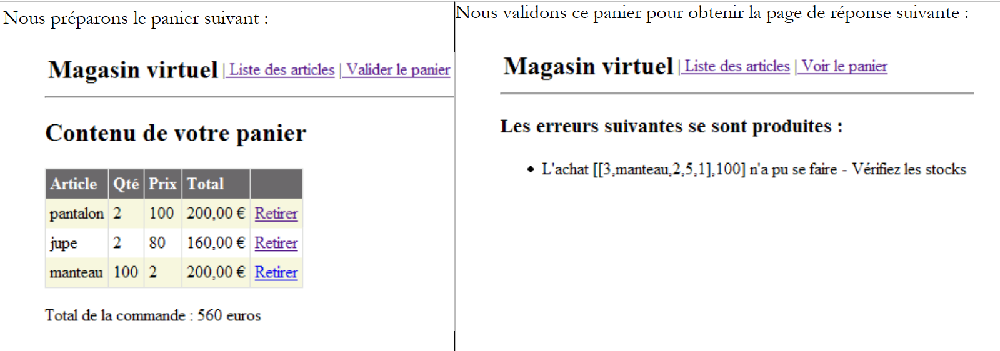 |
Maintenant vérifions le contenu de la table [ARTICLES] avec ACCESS :

Les articles [pantalon] et [jupe] ont été achetés et leurs stocks décrémentés de la quantité achetée. L'article [manteau] n'a pu être acheté car la quantité demandée excédait la quantité en stock. Nous invitons le lecteur à faire des tests complémentaires.
2.5. La classe d'implémentation [ArticlesDaoFirebirdProvider]
2.5.1. Le fournisseur d'accès Firebird-net-provider
Nous avons déjà utilisé une source de données [Firebird] que nous avons utilisée via un pilote ODBC. S'ils apportent une grande réutisabilité au code qui les emploie, les pilotes ODBC sont cependant moins performants que les pilotes écrits spécifiquement pour le SGBD ciblé. Le SGBD [Firebird] peut être utilisé via une bibliothèque de classes spécifiques que l'on peut télécharger sur le site de Firebird [http://firebird.sourceforge.net/]. La page de téléchargements offre les liens suivants (avril 2005) :

Le lien [firebird-net-provider] est le lien à utiliser pour télécharger les classes .NET d'accès au SGBD Firebird. L'installation du paquetage donne naissance à un dossier analogue au suivant :

Deux éléments nous intéressent :
- [FirebirdSql.Data.Firebird.dll] : l'assembly contenant les classes .NET d'accès au SGBD Firebird
- [FirebirdNETProviderSDK.chm] : la documentation sur ces classes
Par la suite, pour qu'un projet Viusal Studio puisse utiliser ces classes, on fera deux choses :
- on mettra l'assembly [FirebirdSql.Data.Firebird.dll] dans le dossier [bin] du projet
- on ajoutera ce même assembly aux références du projet
2.5.2. Le code de la classe [ArticlesDaoFirebirdProvider]
La classe [ArticlesDaoFirebirdProvider] est très proche de la classe [ArticlesDaoSqlServer] étudiée précédemment. Aussi n'indiquerons-nous que les changements apportés vis à vis de cette version :
- les classes nécessaires sont dans l'espace de noms [FirebirdSql.Data.Firebird] au lieu de l'espace de noms [System.Data.SqlClient]
- la connexion de type [SqlConnection] a maintenant le type [FbConnection]
- les objets [SqlCommand] ont maintenant le type [FbCommand]
- les objets [SqlParameter] ont maintenant le type [FbParameter]
Le constructeur de la classe admet quatre paramètres, avec lesquels il construit la chaîne de connexion à la base :
' constructeur
Public Sub New(ByVal serveur As String, ByVal databaseName As String, ByVal uid As String, ByVal password As String)
' serveur : nom de la machine hôte du SGBD
' databaseName : chemin d'accès à la base de données
' uid : identité de l'utilisateur qui se connecte
' password : son mot de passe
...
End Sub
Le code complet de la classe [ArticlesDaoFirebirdProvider] est le suivant :
Imports System
Imports System.Collections
Imports FirebirdSql.Data.Firebird
Namespace istia.st.articles.dao
Public Class ArticlesDaoFirebirdProvider
Implements istia.st.articles.dao.IArticlesDao
' champs privés
Private connexion As FbConnection = Nothing
Private databasePath As String
Private insertCommand As FbCommand
Private updatecommand As FbCommand
Private deleteSomeCommand As FbCommand
Private selectSomeCommand As FbCommand
Private updateStockCommand As FbCommand
Private deleteAllCommand As FbCommand
Private selectAllCommand As FbCommand
' constructeur
Public Sub New(ByVal serveur As String, ByVal databasePath As String, ByVal uid As String, ByVal password As String)
' serveur : nom de la machine hôte du SGBD Firebird
' databaseName : chemin d'accès à la base de données à exploiter
' uid : identité de l'utilisateur qui se connecte à la base
' password : son mot de passe
'on récupère le nom de la base passé en argument
Me.databasePath = databasePath
'on instancie la connexion
Dim connectString As String = String.Format("DataSource={0};Database={1};User={2};Password={3}", serveur, databasePath, uid, password)
connexion = New FbConnection(connectString)
' on prépare les requêtes SQL
insertCommand = New FbCommand("insert into ARTICLES(id, nom, prix, stockactuel, stockminimum) values (@id,@nom,@prix,@sa,@sm)", connexion)
updatecommand = New FbCommand("update ARTICLES set nom=@nom, prix=@prix, stockactuel=@sa, stockminimum=@sm where id=@id", connexion)
deleteSomeCommand = New FbCommand("delete from ARTICLES where id=@id", connexion)
selectSomeCommand = New FbCommand("select id, nom, prix, stockactuel, stockminimum from ARTICLES where id=@id", connexion)
updateStockCommand = New FbCommand("update ARTICLES set stockactuel=stockactuel+@mvt where id=@id and (stockactuel+@mvt)>=0", connexion)
selectAllCommand = New FbCommand("select id, nom, prix, stockactuel, stockminimum from ARTICLES", connexion)
deleteAllCommand = New FbCommand("delete from ARTICLES", connexion)
End Sub
Public Function ajouteArticle(ByVal unArticle As Article) As Integer Implements IArticlesDao.ajouteArticle
' section exclusive
SyncLock Me
' on prépare la requête d'insertion
With insertCommand.Parameters
.Clear()
.Add(New FbParameter("@id", unArticle.id))
.Add(New FbParameter("@nom", unArticle.nom))
.Add(New FbParameter("@prix", unArticle.prix))
.Add(New FbParameter("@sa", unArticle.stockactuel))
.Add(New FbParameter("@sm", unArticle.stockminimum))
End With
Try
'on l'exécute
Return executeUpdate(insertCommand)
Catch ex As Exception
'erreur de requête
Throw New Exception(String.Format("Erreur à l'ajout de l'article [{0}] : {1}", unArticle.ToString, ex.Message))
End Try
End SyncLock
End Function
Public Function changerStockArticle(ByVal idArticle As Integer, ByVal mouvement As Integer) As Integer Implements IArticlesDao.changerStockArticle
' section exclusive
SyncLock Me
' on prépare la requête de mise à jour du stock
With updateStockCommand.Parameters
.Clear()
.Add(New FbParameter("@mvt", mouvement))
.Add(New FbParameter("@id", idArticle))
End With
'on l'exécute
Try
Return executeUpdate(updateStockCommand)
Catch ex As Exception
'erreur de requête
Throw New Exception(String.Format("Erreur lors du changement de stock [idArticle={0}, mouvement={1}] : [{2}]", idArticle, mouvement, ex.Message))
End Try
End SyncLock
End Function
Public Sub clearAllArticles() Implements IArticlesDao.clearAllArticles
' section exclusive
SyncLock Me
Try
'on exécute la requête d'insertion
executeUpdate(deleteAllCommand)
Catch ex As Exception
'erreur de requête
Throw New Exception(String.Format("Erreur lors de la suppression des articles : {0}", ex.Message))
End Try
End SyncLock
End Sub
Public Function getAllArticles() As System.Collections.IList Implements IArticlesDao.getAllArticles
' section exclusive
SyncLock Me
Try
'on exécute la requête select
Dim articles As IList = executeQuery(selectAllCommand)
'on retourne le liste
Return articles
Catch ex As Exception
'erreur de requête
Throw New Exception(String.Format("Erreur lors de l'obtention des articles [select id,nom,prix,stockactuel,stockminimum from articles]: {0}", ex.Message))
End Try
End SyncLock
End Function
Public Function getArticleById(ByVal idArticle As Integer) As Article Implements IArticlesDao.getArticleById
' section exclusive
SyncLock Me
' on prépare la requête select
With selectSomeCommand.Parameters
.Clear()
.Add(New FbParameter("@id", idArticle))
End With
'on l'exécute
Try
'on exécute la requête
Dim articles As IList = executeQuery(selectSomeCommand)
'on test si l'on a trouvé l'article
If articles.Count = 0 Then Return Nothing
'on retourne l'article
Return CType(articles.Item(0), Article)
Catch ex As Exception
'erreur de requête
Throw New Exception(String.Format("Erreur lors de la recherche de l'article [{0} : {1}", idArticle, ex.Message))
End Try
End SyncLock
End Function
Public Function modifieArticle(ByVal unArticle As Article) As Integer Implements IArticlesDao.modifieArticle
' section exclusive
SyncLock Me
' on prépare la requête update
With updatecommand.Parameters
.Clear()
.Add(New FbParameter("@nom", unArticle.nom))
.Add(New FbParameter("@prix", unArticle.prix))
.Add(New FbParameter("@sa", unArticle.stockactuel))
.Add(New FbParameter("@sm", unArticle.stockminimum))
.Add(New FbParameter("@id", unArticle.id))
End With
' on l'exécute
Try
'on exécute la requête d'insertion
Return executeUpdate(updatecommand)
Catch ex As Exception
'erreur de requête
Throw New Exception("Erreur lors de la modification de l'article [" + unArticle.ToString + "]", ex)
End Try
End SyncLock
End Function
Public Function supprimeArticle(ByVal idArticle As Integer) As Integer Implements IArticlesDao.supprimeArticle
' section exclusive
SyncLock Me
' on prépare la requête delete
With deleteSomeCommand.Parameters
.Clear()
.Add(New FbParameter("@id", idArticle))
End With
'on l'exécute
Try
'on exécute la requête de suppression
Return executeUpdate(deleteSomeCommand)
Catch ex As Exception
'erreur de requête
Throw New Exception(String.Format("Erreur lors de la suppression de l'article [id={0}] : {1}", idArticle, ex.Message))
End Try
End SyncLock
End Function
Private Function executeQuery(ByVal query As FbCommand) As IList
' exécution d'une requête SELECT
' déclaration de l'objet permettant l'accès à toutes les lignes de la table résultat
Dim myReader As FbDataReader = Nothing
Try
'on crée une connexion à la BDD
connexion.Open()
'on exécute la requête
myReader = query.ExecuteReader()
'on déclare une liste d'articles pour la retourner par la suite
Dim articles As IList = New ArrayList
Dim unArticle As Article
While myReader.Read()
'on prépare un article avec les valeurs du reader
unArticle = New Article
unArticle.id = myReader.GetInt32(0)
unArticle.nom = myReader.GetString(1)
unArticle.prix = myReader.GetDouble(2)
unArticle.stockactuel = myReader.GetInt32(3)
unArticle.stockminimum = myReader.GetInt32(4)
'on ajoute l'article à la liste
articles.Add(unArticle)
End While
'on retourne le résultat
Return articles
Finally
' libération des ressources
If Not myReader Is Nothing And Not myReader.IsClosed Then myReader.Close()
If Not connexion Is Nothing Then connexion.Close()
End Try
End Function
Private Function executeUpdate(ByVal updateCommand As FbCommand) As Integer
' exécution d'une requête de mise à jour
Try
'on crée une connexion à la BDD
connexion.Open()
'on exécute la requête
Return updateCommand.ExecuteNonQuery()
Finally
' libération des ressources
If Not connexion Is Nothing Then connexion.Close()
End Try
End Function
End Class
End Namespace
Le lecteur est invité à lire ce code à la lumière des commentaires de la classe [ArticlesDaoSqlServer] faits précédemment.
2.5.3. Génération de l'assembly de la couche [dao]
Le nouveau projet Visual Studio a la structure suivante :

On notera la présence de l'assembly [FirebirdSql.Data.Firebird.dll] dans les références du projet. Cette DLL a été placée dans le dossier [bin] du projet. Le projet est configuré pour générer une DLL appelée [webarticles-dao.dll] :
 |  |
2.5.4. Tests Nunit de la couche [dao]
2.5.4.1. La classe de test NUnit
La classe de test Nunit de la classe d'implémentation [ArticlesDaoFirebirdProvider] est la même que celle de la classe [ArticlesDaoPlainODBC] (cf paragraphe 2.3.3.2). Nous suivons une démarche analogue pour préparer le test Nunit de la classe [ArticlesDaoFirebirdProvider] :
- nous créons dans le dossier Visual Studio du projet [dao-firebird-provider] le dossier [tests] (à droite) par recopie du dossier [bin] du projet de tests de la couche [dao-odbc] (à gauche) :
|  |
- dans le dossier [tests] nous remplaçons la DLL [webarticles-dao.dll] par la DLL [webarticles-dao.dll] issue de la génération du projet [dao-firebird-provider]
- nous modifions le fichier de configuration [spring-config.xml] afin d'instancier la nouvelle classe [ArticlesDaoFirebirdProvider] :
Commentaires :
- ligne 7, l'objet [articlesdao] est maintenant associé à une instance de la classe [ArticlesDaoFirebirdProvider]
- cette classe a un constructeur à quatre arguments
- la machine hôte du SGBD - ligne 9
- le chemin d'accès à la base de données Firebird - ligne 12
- le login de l'utilisateur qui se connecte - ligne 15
- son mot de passe - ligne 18
2.5.4.2. Tests
La table [ARTICLES] de la source de données est remplie avec les articles suivants (utiliser IBExpert) :
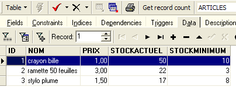
Nous sommes prêts pour les tests. A l'aide de l'application [Nunit-Gui], nous chargeons la DLL [test-webarticles-dao.dll] du dossier [tests] ci-dessus et exécutons le test [testGetAllArticles] :
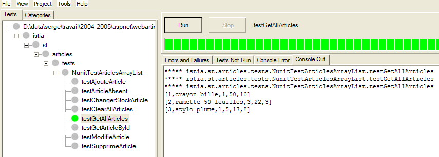
Malgré le nom [NUnitTestArticlesDaoArrayList] donné initialement à la classe de test, c'est bien la classe [ArticlesDaoFirebirdProvider] qui est ici testée. La copie d'écran montre que nous avons récupéré correctement les articles que nous avions placés dans la table [ARTICLES]. Maintenant, faisons la totalité des tests :

Le lecteur qui visualise ce document sur écran pourra voir que tous les tests ont été réussis (couleur verte). Ce qu'il ne peut pas voir, c'est que les tests se sont déroulés nettement plus rapidement qu'avec la base d'articles accédée via un pilote ODBC de notre première implémentation.
2.5.5. Intégration de la nouvelle couche [dao] dans l'application [webarticles]
Nous suivons la démarche expliquée déjà à deux reprises notamment au paragraphe 2.3.4. Nous apportons les modifications suivantes au contenu du dossier [runtime] :
- dans le dossier [bin], la DLL de l'ancienne couche [dao] est remplacée par la DLL de la nouvelle couche [dao] implémentée par la classe [ArticlesDaoFirebirdProvider]. Nous y plaçons également la DLL nécessaire à Firebird [FirebirdSql.Data.Firebird.dll] :
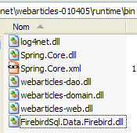
- dans [runtime], le fichier de configuration [web.config] est remplacé par un fichier qui prend en compte la nouvelle classe d'implémentation :
Commentaires :
- les lignes 14-27 associent au singleton [articlesDao] une instance de la nouvelle classe [ArticlesDaoFirebirdProvider]. C'est la seule modification.
Nous sommes prêts pour les tests. Nous configurons le serveur web [Cassini] comme dans les tests précédents. Nous initialisons la table des articles avec les valeurs suivantes :
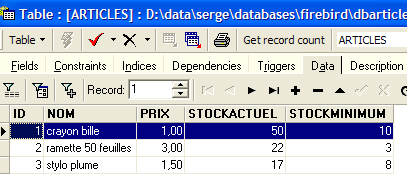
Avec un navigateur nous demandons l'URL [http://localhost/webarticles/main.aspx] :
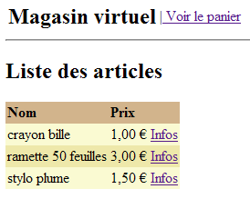
 |
Maintenant vérifions le contenu de la table [ARTICLES] :

Les articles [crayon bille] et [ramette 50 feuilles] ont été achetés et leurs stocks décrémentés de la quantité achetée. L'article [stylo plume] n'a pu être acheté car la quantité demandée excédait la quantité en stock. Nous invitons le lecteur à faire des tests complémentaires.
2.5.6. La classe d'implémentation [ArticlesDaoSqlMap]
2.5.6.1. Le produit Ibatis SqlMap
Nous avons écrit quatre implémentations différentes de la couche [dao] de notre application [webarticles]. A chaque fois nous avons pu intégrer la nouvelle couche [dao] à l'application [webarticles] sans recompilation des deux autres couches [web] et [domain]. Ceci a été obtenu, rappelons-le, par deux choix d'architecture :
- l'accès aux couches via des interfaces
- l'intégration des couches par Spring
Nous souhaitons aller un peu plus loin. Bien que différentes, nos quatre implémentations de la couche [dao] offrent des similitudes frappantes. Une fois la première implémentation écrite, les trois autres ont été obtenues quasiment par copier-coller et substitution de certains mots clés par d'autres mots clés. La logique, elle, n'a pas été modifiée. On peut se demander s'il ne serait pas possible d'avoir une implémentation qui nous affranchirait des différents modes d'accès aux données. Nous en avons utilisé quatre :
- accès via un pilote ODBC à une source de données ODBC
- accès direct à une base SQL Server
- accès via un pilote Ole Db à une source de données Ole Db
- accès direct à une base Firebird
L'outil Ibatis SqlMap [[http://www.ibatis.com/] rend possible le développement de couches d'accès aux données qui soient indépendantes de la nature réelle de la source de données. L'accès aux données est assuré à l'aide :
- de fichiers de configuration dans lesquels sont placées les informations qui définissent la source de données et les opérations que l'on veut faire dessus
- une bibliothèque de classes qui s'appuient sur ces informations pour accéder aux données
L'outil Ibatis SqlMap a été développé initialement pour la plate-forme Java. Son portage vers la plate-forme .NET est récent et semble-t-il partiellement bogué (avis personnel qui demanderait une vérification poussée). Néanmoins l'outil ayant fait ses preuves sur la plate-forme Java, il semble intéressant d'en présenter la version .NET.
2.5.6.2. Où trouver IBATIS SqlMap ?
Le site principal de Firebird est [http://www.ibatis.com/]. La page de téléchargements offre les liens suivants :

On choisira le lien [Stable Binaries] qui nous emmène chez [SourceForge.net]. Suivre le processus de téléchargement jusqu'au bout. On obtient un zip contenant les fichiers suivants :
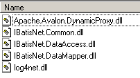
Dans un projet Visual Studio utilisant Ibatis SqlMap, il faut faire deux choses :
- mettre les fichiers ci-dessus dans le dossier [bin] du projet
- ajouter au projet une référence à chacun de ces fichiers
2.5.6.3. Les fichiers de configuration d'Ibatis SqlMap
Une source de données [SqlMap] va être définie au moyen des fichiers de configuration suivants :
- providers.config : définit les bibliothèques de classes à utiliser pour accéder aux données
- sqlmap.config : définit les caractéristiques de la connexion à établir
- fichiers de mapping : définissent les opérations à faire sur les données
La logique de ces fichiers est la suivante :
- pour accéder aux données, il va nous falloir une connexion. Pour représenter celle-ci, nous avons déjà rencontré plusieurs classes : OdbcConnection, SqlConnection, OleDbConnection, FbConnection. Il va également nous falloir un objet [Command] pour émettre des requêtes SQL : OdbcCommand, SqlCommand, OleDbCommand, FbCommand. Etc.. Dans le fichier [providers.config], nous définissons l'ensemble des classes dont nous avons besoin.
- le fichier [sqlmap.config] définit essentiellement la chaîne de connexion à la base qui contient les données. La connexion à la base sera ouverte par instanciation de la classe [Connection] définie dans [providers.config], au constructeur duquel sera passée la chaîne de connexion définie dans [sqlmap.config].
- les fichiers de mapping définissent :
- des associations entre lignes de tables de données et classe .NET dont les instances contiendront ces lignes
- les opérations SQL à exécuter. Celles-ci sont identifiées par un nom. Le code .NET exécute ces opérations via leur nom, ce qui a pour conséquence d'éliminer tout code SQL du code .NET.
2.5.6.4. Les fichiers de configuration du projet [dao-sqlmap]
Examinons sur un exemple, la nature exacte des fichiers de configuration de SqlMap. Nous allons nous placer dans le cas où la source de données est la source ODBC Firebird du paragraphe 2.3.3.1.
2.5.6.4.1. providers.config
Le fichier [providers.config] pour une source ODBC est celui-ci :
Commentaires :
- un fichier [providers.config] est distribué avec le paquetage de [SqlMap]. Il propose plusieurs fournisseurs d'accès (provider) standard. Le code ci-dessus provient directement de ce fichier.
- un <provider> a un nom - ligne 6 - peut être quelconque
- un <provider> peut être activé [enabled=true] ou non [enabled=false]. S'il est activé, la DLL référencée ligne 8 doit être accessible. Un fichier [providers.config] peut avoir plusieurs balises <provider>.
- ligne 8 - nom de l'assembly qui contient les classes définies lignes 9-15
- ligne 9 - classe à utiliser pour créer une connexion
- ligne 10 - classe à utiliser pour créer un objet [Command] d'émission de commandes SQL
- ligne 11 - classe à utiliser pour gérer les paramètres d'une commande SQL paramétrée
- ligne 12 - classe d'énumération des types de données possibles pour les champs d'une table
- ligne 13 - nom de la propriété d'un objet [Parameter] qui contient le type de la valeur de ce paramètre
- ligne 14 - nom de la classe [Adapter] permettant de créer des objets [DataSet] à partir de la source de données
- ligne 15 - nom de la classe [CommandBuilder] qui associée à un objet [Adapter] permet de générer automatiquement les propriétés [InsertCommand, DeleteCommand, UpdateCommand] de celui-ci à partir de sa propriété [SelectCommand]
- lignes 16 - 19 - on définit comment sont gérées les commandes SQL paramétrées. Selon les cas, il faut écrire par exemple :
ou bien
Dans le premier cas, on parle de paramètres positionnels formels. Les valeurs effectives de ceux-ci doivent être fournies dans l'ordre des paramètres formels. Dans le second cas, on a affaire à des paramètres nommés. On fournit une valeur à un tel paramètre en précisant son nom. L'ordre n'a plus d'importance.
- ligne 16 - on indique que les sources ODBC utilisent des paramètres positionnels
- lignes 17-19 - concernent les paramètres nommés. Ici, il n'y en a pas.
Ces informations permettent à SqlMap de savoir par exemple, quelle classe il doit instancier pour créer une connexion. Ici ce sera la classe [OdbcConnection] (ligne 9).
2.5.6.4.2. sqlmap.config
Le fichier [providers.config] définit les classes à utiliser pour accéder à une source ODBC. Il n'indique aucune source ODBC. C'est le fichier [sqlmap.config] qui le fait :
Commentaires :
- ligne 3 - on définit un fichier de propriétés [properties.xml]. Celui-ci définit des couples (clé, valeur). Les clés peuvent être quelconques. La valeur associée à une clé C est obtenue par la notation ${C} dans [sqlmap.config]. Voici le fichier [properties.xml] qui sera associé au fichier [sqlmap.config] précédent :
ligne 3 - la clé [provider] est définie. Sa valeur est le nom de la balise <provider> à utiliser dans [providers.config]
ligne 4 - la clé [connectionString] est définie. Sa valeur est la chaîne de connexion à utiliser pour ouvrir une connexion sur la source de données ODBC Firebird.
- lignes 4-7 - des paramètres de configuration :
- ligne 5 - les requêtes SQL seront identifiées par un nom qui lui même peut faire partie d'un espace de noms. [useStatementNamespaces="false"] indique qu'on n'utilisera pas d'espaces de noms.
- ligne 6 - SqlMap possède différentes statégies de cache pour minimiser les accès à la source de données. [cacheModelsEnabled="false"] indique qu'on n'en utilisera aucune.
- lignes 9-13 - on définit les caractéristiques de la source de données :
- ligne 10 - nom du <provider> de [providers.config] à utiliser
- ligne 11 - chaîne de connexion à la source de données
- ligne 12 - gestionnaire de transactions. Ici nous ne l'avons pas utilisé mais avons laissé néanmoins la ligne car elle était dans le fichier de distribution standard.
- lignes 14-16 - liste des fichiers définissant les opérations SQL à effectuer sur la source de données.
- ligne 15 - définit le fichier de mapping [articles.xml]
2.5.6.4.3. articles.xml
Ce fichier sert deux fonctions :
- définir un mapping objet des tables de la source de données. Dans les cas les plus simples, cela revient à associer une classe à une ligne d'une table.
- définir des opérations SQL paramétrées et les nommer.
Nous utiliserons le fichier [articles.xml] suivant :
Commentaires :
- lignes 4-11 - on définit un mapping entre une ligne de la table [ARTICLES] de la source de données et la classe [istia.st.articles.dao.Article]. A chaque colonne (column) de la table est associée une propriété (property) de la classe [Article]. Ce mapping permet à [SqlMap] de construire le résultat d'une opération SQL SELECT. Chaque ligne résultat du SELECT sera placée dans un objet [Article] selon les règles du mapping.
- ligne 5 - le mapping fait l'objet d'une balise <resultMap> et est nommé avec l'attribut [id="article"]. La classe associée est désignée par l'attribut [class="istia.st.articles.dao.Article"].
- lignes 14-44 - on définit les opérations SQL dont on a besoin
- lignes 16-18 - on définit une opération SELECT appelée [getAllArticles]
- ligne 16 - l'opération SELECT est nommée [name= "getAllArticles "] et le mapping à utiliser est défini par l'attribut [resultMap="article"]. On fait donc référence ici au mapping des lignes 5-11
- ligne 17 - texte de la commande SQL à exécuter
- lignes 20-22 - on définit la commande SQL-Delete [clearAllArticles] destinée à vider la table des articles.
- lignes 24-27 - on définit la commande SQL-Insert [insertArticle] destinée à ajouter un nouvel article dans la table des articles. C'est une requête paramétrée par les éléments (#id#, #nom#, #prix#, #stockactuel#, #stockminimum#). Les valeurs de ces cinq éléments viendront d'un objet [Article] passé en paramètre : [parameterClass="istia.st.articles.dao.Article"]. L'objet paramètre doit avoir les propriétés (id, nom, prix, stockactuel, stockminimum) référencées par la commande SQL paramétrée.
- lignes 29-31 - on définit la commande SQL Delete [deleteArticle] destinée à supprimer un article dont on connaît le numéro #value#. Ce numéro sera passé en paramètre : [parameterClass="int"]. C'est une règle générale. Lorsque le paramètre est unique, il est référencé par le mot clé #value# dans le texte de la commande SQL.
- lignes 33-35 - on définit la commande SQL-Update [modifyArticle] destinée à modifier un article dont on connaît le numéro. Comme pour la commande [insertArticle], les cinq informations nécessaires viendront des propriétés d'un objet [istia.st.articles.dao.Article].
- lignes 37-39 - on définit la commande SQL-Select [getArticleById] qui permet d'obtenir la ligne d'un article dont on connaît le numéro.
- lignes 41-43 - on définit la commande SQL-Update [changerStockArticle] qui modifie le champ [stockactuel] d'un article dont on connaît le numéro. Les deux informations nécessaires, le n° #id# de l'article et l'incrément #mouvement# du stock seront trouvées dans un dictionnaire : [parameterClass="Hashtable"]. Celui-ci devra avoir deux clés : id et mouvement. Ce seront les valeurs associées à ces deux clés qui seront utilisées dans la commande SQL.
2.5.6.4.4. Emplacement des fichiers de configuration
Nous verrons deux situations différentes :
- dans le cas d'un test Nunit, les fichiers de configuration de [SqlMap] seront placés dans le même dossier que les binaires testés.
- dans le cas d'une application web, ils seront placés à la racine de l'application.
2.5.6.5. L'API de SqlMap
Les classes de SqlMap sont contenues dans des DLL que l'on place en général dans le dossier [bin] de l'application :

Les applications utilisant les classes de SqlMap doivent importer l'espaces de noms [IBatisNet.DataMapper] :
Toutes les opérations SQL se font au travers d'un singleton de type [Mapper], une classe dde l'espace de noms [IBatisNet.DataMapper ]. Le singleton est obtenu de la façon suivante :
Pour exécuter la commande SqlMap [getAllArticles], on écrira :
- la méthode [QueryForList] permet d'obtenir le résultat d'une commande SELECT dans une liste
- le premier paramètre est le nom de la commande SQL à exécuter (cf articles.xml)
- le second paramètre est le paramètre à transmettre à la requête SQL. Doit correspondre à l'attribut [parameterClass] de la commande SqlMap. Dans [articles.xml], on a [parameterClass=Nothing]. Aussi passe-t-on ici un pointeur nul.
- le résultat est de type IList. Les objets de cette liste sont indiqués par l'attribut [resultMap] de la commande SQL-select : [resultMap="article"]. "article" est un nom de mapping :
La classe associée à ce mapping est [istia.st.articles.dao.Article]. Au final, la variable [articles] définie plus haut est une liste d'objets [ istia.st.articles.dao.Article]. Nous avons donc obtenu la totalité de la table [ARTICLES] en une instruction. Si la table [ARTICLES] est vide, on obtient un objet [IList] avec 0 élément.
Pour exécuter la commande SqlMap [getArticleById], on écrira :
- la méthode [QueryForObject] permet d'obtenir le résultat d'une commande SELECT ne rendant qu'une ligne
- le premier paramètre est le nom de la commande SqlMap à exécuter
- le second paramètre est le paramètre à transmettre à la requête SQL. Doit correspondre à l'attribut [parameterClass] de la commande SqlMap. Dans [articles.xml], on a [parameterClass="int"]. Aussi passe-t-on ici un entier représentant le n° de l'article cherché.
- le résultat est de type Object. Si le SELECT n'a rendu aucune ligne, on a le pointeur nul (nothing) comme résultat.
Pour exécuter la commande SqlMap [insertArticle], on écrira :
- la méthode [Insert] permet d'exécuter des commandes SQL INSERT
- le premier paramètre est le nom de la commande SqlMap à exécuter
- le second paramètre est le paramètre à transmettre à celle-ci. Doit correspondre à l'attribut [parameterClass] de la commande SqlMap. Dans [articles.xml], on a [parameterClass="istia.st.articles.dao.Article"]. Aussi passe-t-on ici un objet de type [istia.st.articles.dao.Article].
Pour exécuter la commande SqlMap [deleteArticle], on écrira :
- la méthode [Delete] permet d'exécuter des commandes SQL DELETE
- le premier paramètre est le nom de la commande SQL à exécuter
- le second paramètre est le paramètre à transmettre à celle-ci. Doit correspondre à l'attribut [parameterClass] de la commande SqlMap. Dans [articles.xml], on a [parameterClass="int"]. Aussi passe-t-on ici le n° de l'article à supprimer.
- le résultat de la méthode [Delete] est le nombre de lignes détruites
De façon analogue, pour exécuter la commande SqlMap [clearAllArticles], on écrira :
Pour exécuter la commande SqlMap [modifyArticle], on écrira :
- la méthode [Update] permet d'exécuter des commandes SQL UPDATE
- le premier paramètre est le nom de la commande SqlMap à exécuter
- le second paramètre est le paramètre à transmettre à celle-ci. Doit correspondre à l'attribut [parameterClass] de la commande SqlMap. Dans [articles.xml], on a [parameterClass="istia.st.articles.dao.Article"]. Aussi passe-t-on ici un objet de type [istia.st.articles.dao.Article].
- le résultat de la méthode [Update] est le nombre de lignes modifiées.
De façon analogue, pour exécuter la commande SqlMap [changerStockArticle], on écrira :
Dim paramètres As New Hashtable(2)
paramètres("id") = idArticle
paramètres("mouvement") = mouvement
' mise à jour
dim nbLignes as Integer= mappeur.Update("changerStockArticle", paramètres)
- le second paramètre correspond à l'attribut [parameterClass] de la commande SqlMap. Dans [articles.xml], on a [parameterClass="Hashtable"]. La commande SQL paramétrée [changerStockArticle] utilise les paramètres [id, mouvement].Aussi passe-t-on ici un dictionnaire ayant ces deux clés.
2.5.6.6. Le code de la classe [ArticlesDaoSqlMap]
Après les explications précédentes, on est maintenant capable d'écrire la nouvelle classe d'implémentation [ArticlesDaoSqlMap] suivante :
Option Explicit On
Option Strict On
Imports System
Imports IBatisNet.DataMapper
Imports System.Collections
Namespace istia.st.articles.dao
Public Class ArticlesDaoSqlMap
Implements IArticlesDao
' champs privés
Dim mappeur As SqlMapper = Mapper.Instance
' liste de tous les articles
Public Function getAllArticles() As IList Implements IArticlesDao.getAllArticles
SyncLock Me
Try
Return mappeur.QueryForList("getAllArticles", Nothing)
Catch ex As Exception
Throw New Exception("Echec de l'obtention de tous les articles : [" + ex.ToString + "]")
End Try
End SyncLock
End Function
' ajout d'un article
Public Function ajouteArticle(ByVal unArticle As Article) As Integer Implements IArticlesDao.ajouteArticle
SyncLock Me
Try
' unArticle : article à ajouter
' insertion
mappeur.Insert("insertArticle", unArticle)
Return 1
Catch ex As Exception
Throw New Exception("Echec de l'ajout de l'article [" + unArticle.ToString + "] : [" + ex.ToString + "]")
End Try
End SyncLock
End Function
' supprime un article
Public Function supprimeArticle(ByVal idArticle As Integer) As Integer Implements IArticlesDao.supprimeArticle
SyncLock Me
Try
' id : id de l'article à supprimer
' suppression
Return mappeur.Delete("deleteArticle", idArticle)
Catch ex As Exception
Throw New Exception("Erreur lors de la suppression de l'article d'id [" + idArticle.ToString + "] : [" + ex.ToString + "]")
End Try
End SyncLock
End Function
' modifie un article
Public Function modifieArticle(ByVal unArticle As Article) As Integer Implements IArticlesDao.modifieArticle
SyncLock Me
Try
' mise à jour
Return mappeur.Update("modifyArticle", unArticle)
Catch ex As Exception
Throw New Exception("Erreur lors de la mise à jour de l'article [" + unArticle.ToString + "] : [" + ex.ToString + "]")
End Try
End SyncLock
End Function
' recherche d'un article
Public Function getArticleById(ByVal idArticle As Integer) As Article Implements IArticlesDao.getArticleById
SyncLock Me
Try
' id : id de l'article recherché
Return CType(mappeur.QueryForObject("getArticleById", idArticle), Article)
Catch ex As Exception
Throw New Exception("Erreur lors de la recherche de l'article d'id [" + idArticle.ToString + "] : [" + ex.ToString + "]")
End Try
End SyncLock
End Function
' suppression de tous les articles
Public Sub clearAllArticles() Implements IArticlesDao.clearAllArticles
SyncLock Me
Try
mappeur.Delete("clearAllArticles", Nothing)
Catch ex As Exception
Throw New Exception("Erreur lors de l'effacement de la table des articles : [" + ex.ToString + "]")
End Try
End SyncLock
End Sub
' on change le stock d'un article
Public Function changerStockArticle(ByVal idArticle As Integer, ByVal mouvement As Integer) As Integer Implements IArticlesDao.changerStockArticle
SyncLock Me
Try
' id : id de l'article dont on change le stock
' mouvement : mouvement du stock
Dim paramètres As New Hashtable(2)
paramètres("id") = idArticle
paramètres("mouvement") = mouvement
' mise à jour
Return mappeur.Update("changerStockArticle", paramètres)
Catch ex As Exception
Throw New Exception(String.Format("Erreur lors du changement de stock [{0},{1}] : {2}", idArticle, mouvement, ex.ToString))
End Try
End SyncLock
End Function
End Class
End Namespace
Le lecteur est invité à lire ce code à la lumière des explications données pour l'API de SqlMap. On notera avec intérêt que l'utilisation de [SqlMap] a réduit fortement la quantité de code à écrire.
2.5.6.7. Génération de l'assembly de la couche [dao]
Le nouveau projet Visual Studio a la structure suivante :

On notera la présence des "assembly" nécessaires à SqlMap dans les références du projet. Ces DLL ont été placées dans le dossier [bin] du projet. Le projet est configuré pour générer une DLL appelée [webarticles-dao.dll] :
 |  |
2.5.6.8. Tests Nunit de la couche [dao]
2.5.6.8.1. La classe de test NUnit
La classe de test Nunit de la classe d'implémentation [ArticlesDaoSqlMap] est la même que celle de la classe [ArticlesDaoPlainODBC] (cf paragraphe 2.3.3.2). Nous suivons une démarche analogue pour préparer le test Nunit de la classe [ArticlesDaoSqlMap] :
- nous créons dans le dossier Visual Studio du projet [dao-sqlmap] le dossier [test1] (à droite) par recopie du dossier [tests] du projet [dao-odbc] (à gauche) :
|  |
- dans le dossier [tests] nous remplaçons la DLL [webarticles-dao.dll] par la DLL [webarticles-dao.dll] issue de la génération du projet [dao-sqlmap].
- nous ajoutons les DLL nécessaires à SqlMap ainsi que les fichiers de configuration étudiés [providers.config, sqlmap.config, properties.xml, articles.xml].
- nous modifions le fichier de configuration [spring-config.xml] afin d'instancier la nouvelle classe [ArticlesDaoSqlMap] :
Commentaires :
- ligne 7, l'objet [articlesdao] est maintenant associé à une instance de la classe [ArticlesDaoSqlMap]
- cette classe n'a pas de constructeur. C'est le constructeur par défaut qui sera utilisé.
2.5.6.8.2. Tests
La table [ARTICLES] de la source de données Firebird est remplie avec les articles suivants :

Nous sommes prêts pour les tests. A l'aide de l'application [Nunit-Gui], nous chargeons la DLL [test-webarticles-dao.dll] du dossier [test1] ci-dessus et exécutons le test [testGetAllArticles] :
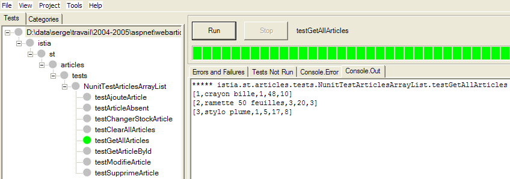
Malgré le nom [NUnitTestArticlesDaoArrayList] donné initialement à la classe de test, c'est bien la classe [ArticlesDaoSqlMap] qui est ici testée. La copie d'écran montre que nous avons récupéré correctement les articles que nous avions placés dans la table [ARTICLES]. Maintenant, faisons la totalité des tests :

Le lecteur qui visualise ce document sur écran pourra voir que certains tests ont été réussis (couleur verte) mais que d'autres ont échoué (couleur rouge). Les tests qui ont échoué sont les tests [testArticleAbsent] et [testChangerStockArticle]. Après de longues recherches, il semble que les causes de ces échecs soient les suivantes :
- dans [testArticleAbsent], on demande de modifier un article qui n'existe pas. On utilise pour cela la méthode [modifieArticle] qui rend le nombre de lignes modifiées donc 0 ou 1. Ici, on devrait avoir 0. Au lieu de cela, on a une exception de type [IBatisNet.Common.Exceptions.ConcurrentException].
- dans [changerStockArticle] on a une opération de nouveau de type [update]. Il s'agit de décrémenter un stock d'une quantité plus grande que le stock. On utilise pour cela la méthode [changerStockArticle] qui rend le nombre de lignes modifiées donc 0 ou 1. La commande SQL a été écrite pour éviter une mise à jour (cf commande SQL "changerStockArticle" dans articles.xml) qui rendrait le stock négatif. On s'attend ici à obtenir 0 comme résultat de la méthode [changerStockArticle]. De nouveau, on a une exception de type [IBatisNet.Common.Exceptions.ConcurrentException].
Les sources d'erreurs possibles sont nombreuses :
- le code de la classe [ArticlesDaoSqlMap] est erroné. C'est possible. Cependant, il vient d'un portage d'une classe Java qui avait fonctionné correctement avec la version Java de SqlMap.
- la version .NET de SqlMap est boguée
- le pilote ODBC de Firebird est bogué
- ...
En l'absence de certitudes, nous allons contourner l'obstacle en interceptant la fameuse exception [IBatisNet.Common.Exceptions.ConcurrentException]. Le nouveau code de la classe [ArticlesDaoSqlMap] devient le suivant :
Les modifications sont aux lignes : 28, 41, 69. Pour les opérations SQL de type [UPDATE, DELETE], s'il se produit une exception de type [IBatisNet.Common.Exceptions.ConcurrentException], on rend 0 comme résultat, indiquant par là qu'aucune ligne n'a été modifiée ou supprimée. Ceci fait, la DLL du projet est régénérée, placée dans le dossier [test1] et les tests NUnit relancés :

Cette fois-ci c'est bon. Nous travaillerons désormais avec cette DLL.
2.5.6.9. Intégration de la nouvelle couche [dao] dans l'application [webarticles]
2.5.6.9.1. source de données ODBC
Nous testons ici la source de données ODBC étudiée au paragraphe 2.3.3.1. Elle est ici utilisée au travers de SqlMap.
Nous suivons la démarche du paragraphe 2.3.4. Nous apportons les modifications suivantes au contenu du dossier [runtime] :
- dans le dossier [bin], la DLL de l'ancienne couche [dao] est remplacée par la DLL de la nouvelle couche [dao] implémentée par la classe [ArticlesDaoSqlMap]. Nous y ajoutons les DLL nécessaires à Firebird et SqlMap :
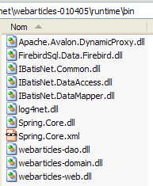
- dans [runtime], on place les fichiers de configuration de SqlMap [providers.config, sqlmap.config, properties.xml, articles.xml] :

- dans [runtime], le fichier de configuration [web.config] est remplacé par un fichier qui prend en compte la nouvelle classe d'implémentation :
Commentaires :
- la lignes 14 associent au singleton [articlesDao] une instance de la nouvelle classe [ArticlesDaoSqlMap]. C'est la seule modification.
Nous sommes prêts pour les tests. Nous configurons le serveur web [Cassini] comme dans les tests précédents. Nous initialisons la table des articles avec les valeurs suivantes :

Avec un navigateur nous demandons l'URL [http://localhost/webarticles/main.aspx] :

 |
Maintenant vérifions le contenu de la table [ARTICLES] :

Les articles [couteau] et [cuiller] ont été achetés et leurs stocks décrémentés de la quantité achetée. L'article [fourchette] n'a pu être acheté car la quantité demandée excédait la quantité en stock. Nous invitons le lecteur à faire des tests complémentaires.
2.5.6.9.2. source de données MSDE
Nous testons ici la source de données MSDE étudiée au paragraphe 2.4.3.1. Elle est ici utilisée au travers de SqlMap. Nous suivons la même démarche que précédemment Nous apportons les modifications suivantes au contenu du dossier [runtime] :
- le contenu du dossier [bin] ne change pas
- dans [runtime], les fichiers de configuration de SqlMap [providers.config, properties.xml] changent. Les fichiers de configuration [sqlmap.config, articles.xml] ne changent pas.
- le fichier [providers.config] configure un nouveau <provider> :
<?xml version="1.0" encoding="utf-8" ?>
<providers>
<clear/>
<provider
name="sqlServer1.1"
assemblyName="System.Data, Version=1.0.5000.0, Culture=neutral, PublicKeyToken=b77a5c561934e089"
connectionClass="System.Data.SqlClient.SqlConnection"
commandClass="System.Data.SqlClient.SqlCommand"
parameterClass="System.Data.SqlClient.SqlParameter"
parameterDbTypeClass="System.Data.SqlDbType"
parameterDbTypeProperty="SqlDbType"
dataAdapterClass="System.Data.SqlClient.SqlDataAdapter"
commandBuilderClass="System.Data.SqlClient.SqlCommandBuilder"
usePositionalParameters = "false"
useParameterPrefixInSql = "true"
useParameterPrefixInParameter = "true"
parameterPrefix="@"
/>
</providers>
Ce <provider> utilise les classes .NET d'accès aux sources de données SQL Server. Il est intégré en standard dans le fichier [providers.config] modèle distribué avec SqlMap.
- le fichier [properties.xml] définit le <provider> de la source MSDE ainsi que la chaîne de connexion de celle-ci :
<?xml version="1.0" encoding="utf-8" ?>
<settings>
<add key="provider" value="sqlServer1.1" />
<add
key="connectionString"
value="Data Source=portable1_tahe\msde140405;Initial Catalog=dbarticles;UID=admarticles;PASSWORD=mdparticles;"/>
</settings>
- dans [runtime], le fichier de configuration [web.config] ne change pas.
Nous sommes prêts pour les tests. Le serveur web [Cassini] garde sa configuration habituelle. Nous initialisons la table des articles de la source MSDE avec [EMS MS SQL Manager] :

Avec un navigateur nous demandons l'URL [http://localhost/webarticles/main.aspx] :

 |
Maintenant vérifions le contenu de la table [ARTICLES] avec [EMS MS SQL Manager] :

Les articles [ballon foot] et [raquette tennis] ont été achetés et leurs stocks décrémentés de la quantité achetée. L'article [rollers] n'a pu être acheté car la quantité demandée excédait la quantité en stock. Nous invitons le lecteur à faire des tests complémentaires.
2.5.6.9.3. source de données OleDb
Nous testons ici la source de données ACCESS présentée au paragraphe 2.4.5.1. Elle est ici utilisée au travers de SqlMap. Nous suivons la même démarche que précédemment Nous apportons les modifications suivantes au contenu du dossier [runtime] :
- le contenu du dossier [bin] ne change pas
- dans [runtime], les fichiers de configuration de SqlMap [providers.config, properties.xml] changent. Les fichiers de configuration [sqlmap.config, articles.xml] ne changent pas.
- le fichier [providers.config] configure un nouveau <provider> :
<?xml version="1.0" encoding="utf-8" ?>
<providers>
<clear/>
<provider
name="OleDb1.1"
enabled="true"
assemblyName="System.Data, Version=1.0.5000.0, Culture=neutral, PublicKeyToken=b77a5c561934e089"
connectionClass="System.Data.OleDb.OleDbConnection"
commandClass="System.Data.OleDb.OleDbCommand"
parameterClass="System.Data.OleDb.OleDbParameter"
parameterDbTypeClass="System.Data.OleDb.OleDbType"
parameterDbTypeProperty="OleDbType"
dataAdapterClass="System.Data.OleDb.OleDbDataAdapter"
commandBuilderClass="System.Data.OleDb.OleDbCommandBuilder"
usePositionalParameters = "true"
useParameterPrefixInSql = "false"
useParameterPrefixInParameter = "false"
parameterPrefix = ""
/>
</providers>
Ce <provider> utilise les classes .NET d'accès aux sources de données OleDb. Il est intégré en standard dans le fichier [providers.config] modèle distribué avec SqlMap.
- le fichier [properties.xml] définit le <provider> de la source OleDb ainsi que la chaîne de connexion de celle-ci :
<?xml version="1.0" encoding="utf-8" ?>
<settings>
<add key="provider" value="OleDb1.1" />
<add
key="connectionString"
value="Provider=Microsoft.Jet.OLEDB.4.0;Data Source=D:\data\serge\databases\access\articles\articles.mdb;"/>
</settings>
- dans [runtime], le fichier de configuration [web.config] ne change pas.
Nous sommes prêts pour les tests. Le serveur web [Cassini] garde sa configuration habituelle. Nous initialisons la table des articles de la source ACCESS de la façon suivante :
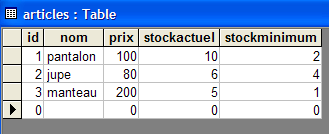
Avec un navigateur nous demandons l'URL [http://localhost/webarticles/main.aspx] :

 |
Maintenant vérifions le contenu de la table [ARTICLES] avec :

Les articles [pantalon] et [jupe] ont été achetés et leurs stocks décrémentés de la quantité achetée. L'article [manteau] n'a pu être acheté car la quantité demandée excédait la quantité en stock. Nous invitons le lecteur à faire des tests complémentaires.
2.5.7. Conclusion
Nous terminons ici ce long article-tutoriel. Qu'avons-nous fait ?
- nous avons implémenté la couche [dao] d'une application web à trois couches de quatre façons différentes :
- en utilisant les classes d'accès .NET aux sources ODBC
- en utilisant les classes d'accès .NET aux sources SQL Server
- en utilisant les classes d'accès .NET aux sources OleDb
- en utilisant les classes d'accès d'une tierce partie pour accéder à une base Firebird
- à chaque fois, nous avons intégré la nouvelle couche [dao] à l'application [webarticles] à trois couches [web, domain, dao] sans recompilation aucune des couches [web, domain]
- nous avons enfin présenté l'outil [SqlMap] qui nous a permis de créer une couche [dao] capable de s'adapter à différentes sources de données de façon transparente pour le code. C'est ainsi qu'avec cette nouvelle couche, nous avons pu utiliser successivement les sources de données des implémentations 1 à 3 précédentes. Ceci a été fait de façon transparente à l'aide de fichiers de configuration.
- nous avons montré la grande souplesse qu'apportaient les outils Spring et SqlMap aux applications web à trois couches.